A self-contained learning booklet that takes you from zero knowledge of this project to explaining and defending it in an SDE interview.
Read it front to back the first time; each part builds on the previous one.
| Part | What you learn | Sections |
|---|---|---|
| Part 1 | What the project is and the background concepts you need | 1–3 |
| Part 2 | The architecture: technologies, high-level and low-level design | 4–6 |
| Part 3 | The implementation: APIs, storage layout, algorithms, flows, concurrency | 7–11 |
| Part 4 | Reliability: failures, performance, testing, deployment, monitoring | 12–16 |
| Part 5 | Interview preparation: 30-minute script, 45 questions, trade-offs, numbers, revision | 17–22 |
How to read the labels. This project is a reference architecture: a detailed, intended design. No source repository, test, deployment, or benchmark has been independently verified, and no code exists yet.
| Label | Meaning |
|---|---|
| Project fact | Documented in the project's design (the default) |
| Background | General computer-science knowledge added for understanding |
| ILLUSTRATIVE | Example arithmetic or scenario used to explain a mechanism |
| BENCHMARK TARGET / UNVERIFIED | A number the design is sized for; nothing has been measured |
Honesty rule: the four resume figures (1,000 concurrent requests, 10K operations/min, < 200 ms p95, ~25% CPU reduction) are targets, never measured results.
It is a distributed object store: a cluster of machines (storage nodes) that together store objects (opaque blobs of bytes such as images, model files, logs, or backups, from a few KB to 64 MiB) and return them by name. A name is a bucket (a namespace) plus a key (the object's name inside it), for example photos/cat.jpg.
It is modelled on Amazon's Dynamo design (also used by Cassandra and Riak) and on the data plane of object stores like S3. It is written in C++20; nodes talk to each other and to clients with gRPC; each node keeps metadata in RocksDB and data in its own files; and the cluster runs as a Kubernetes StatefulSet.
A single disk is a single point of failure. Copying files between machines by hand gives no integrity guarantee and no automatic recovery. The system must:
Applications assume that once storage says "saved", the data is safe and will come back byte-for-byte identical. Machines and disks fail routinely at scale, and disks can flip bits without reporting an error. A storage system has to turn unreliable parts into reliable service.
| Without the design | What goes wrong |
|---|---|
| One copy on one disk | A disk failure loses data |
| A central directory of "where is each object" | The directory becomes a bottleneck and a single point of failure |
| Writes that must reach all copies | One slow or dead node stops all writes |
| No checksums | Corrupted bytes are returned silently |
| No write-ahead log | A crash mid-write leaves metadata pointing at garbage |
| No repair | Copies slowly diverge or disappear after failures |
Imagine a library network with five branches and no head office.
Where the analogy breaks: real versions are compared with clocks, and two customers can submit different editions of the same title at once; the system keeps one (last writer wins).
A service uploads photos/cat.jpg (2.5 MiB) to a five-node cluster with N=3, W=2, R=2.
storage-node-1."photos/cat.jpg" onto the ring and finds the three responsible nodes, say 2, 3, and 4. It stamps a version, for example (hlc=0x18f3a2b4c5d0001, node=1) .OK with the version. The third replica finishes in the background.Later, a reader asks any node for photos/cat.jpg. That node asks all three replicas for metadata, uses the first two answers, picks the highest version, and streams the chunks from one replica, checking every chunk's checksum.
Each concept follows the same pattern: simple explanation, technical explanation, why the project needs it, and how the project uses it. The first two parts are Background; the last two are Project facts.
(bucket, key) to an immutable blob. There are no partial in-place updates; an overwrite creates a new version, and the newest version wins.(version, index) , so chunks are never overwritten. Users do not see versions (no user-visible versioning).hash(key) % nodes remaps almost every key when the node count changes. Virtual nodes (vnodes) give each physical node many points on the ring, which balances load and spreads a failed node's work across all survivors.XXH64("bucket/key") ; replicas = first 3 distinct physical nodes clockwise (the preference list).ONE, QUORUM, ALL. Latency is the W-th (or R-th) fastest replica.R + W > N, no concurrent writer); eventual consistency yes; monotonic reads no in general; linearizability no.(hlc, node_id) where hlc = (physical_ms << 16) | counter ; pings and write headers carry HLCs; the node id breaks ties.fsync/fdatasync forces them to stable storage. A WAL is an append-only log; a change counts as committed once its log record is synced. After a crash, replaying the log rebuilds derived state. fsync has a mostly fixed cost per call, so group commit syncs many waiting writes together in one call.1 − 2^-32. Modern CPUs compute it in hardware (about 10+ GB/s per core). It is not cryptographic: someone who can change the data can recompute it.SUSPECT after 3 s and DOWN after 5 s without a reply. Liveness decides whom to send to right now; it never changes placement, so a wrong guess only causes extra repair work..proto schemas). It supports streaming in either direction, per-call deadlines, standard status codes, and HTTP/2 flow control (a receiver limits how much a sender may send).PutObject, server-streaming GetObject; flow control provides end-to-end backpressure; the callback API lets a few threads serve many streams.fetch_add) completes indivisibly; a mutex lets one thread at a time into a critical section; RCU (read-copy-update) lets readers use an immutable snapshot while a writer builds and publishes a new one.fetch_add for lock-free segment appends; a striped mutex (1024 stripes) for per-key version comparison; an RCU-style ring snapshot behind std::atomic<std::shared_ptr<const Ring>> .storage-node-0, -1, …) and, through volumeClaimTemplates , one PersistentVolumeClaim (PVC) per pod that is reattached when the pod is rescheduled.| ID | Requirement | Why it matters |
|---|---|---|
| F1 | Put stores an object up to 64 MiB, streamed in 1 MiB chunks |
Bounded memory; per-chunk checksums |
| F2 | Get streams the latest version back, verifying checksums |
Never return corrupt data |
| F3 | HeadObject returns size, version, checksum, content type without data |
Cheap metadata reads |
| F4 | DeleteObject removes an object (tombstone + delayed garbage collection) |
Deletes must not be resurrected |
| F5 | List lists keys (best-effort scatter-gather) |
Discovery, without a global index |
| F6 | Replication factor N (default 3) and per-request ONE / QUORUM / ALL |
Callers choose speed vs safety |
| F7 | Every chunk carries a CRC32C, checked on write, on read, and by a scrubber | End-to-end integrity |
| F8 | Each node recovers its metadata after a crash by replaying its WAL | Crash safety |
| F9 | Replicas that missed writes or lost data are repaired asynchronously | Back to N copies automatically |
| F10 | Any node can coordinate any request; no master | No single point of failure |
| Area | Goal | Status |
|---|---|---|
| Durability | An acknowledged write survives the crash of any single node, and the loss of up to W − 1 disks among its replicas |
Design requirement |
| Availability | With N=3, W=2, R=2, reads and writes continue when any one replica of a key is down | Design requirement |
| Integrity | No corrupt chunk is ever returned without an error | Design requirement |
| Concurrency | 1,000 concurrent client sessions without unbounded thread growth | BENCHMARK TARGET |
| Throughput | 10K operations/min (≈ 167 ops/s) on the benchmark workload | BENCHMARK TARGET |
| Latency | p95 < 200 ms end-to-end at that load | BENCHMARK TARGET |
| Efficiency | ~25% lower CPU per operation after I/O optimization | BENCHMARK TARGET |
| Recovery | A restarted node replays its WAL and rejoins without manual steps | Design requirement |
Everything outside the "Inside the system" box (applications, disks, NTP, Kubernetes) is depended on, not built.
The system places, replicates, stores, verifies, recovers, and repairs objects. It does not authenticate end users with an identity provider, encrypt data at rest, guarantee linearizable reads, provide cross-key transactions, or rebalance automatically at scale.
fdatasync.| In scope | Out of scope |
|---|---|
| Storage-node binary; client and node-to-node gRPC services | S3 HTTP compatibility, multipart upload |
| Ring and membership, quorum replication | User-visible object versioning, bucket policies, IAM |
| WAL, segment-file data store, RocksDB metadata | Encryption at rest, erasure coding |
| Hints, read repair, anti-entropy, scrubber, compaction | Cross-region replication |
| Docker image, Kubernetes StatefulSet | Automatic elastic rebalancing at scale |
A C++ load generator (objbench) |
Strong (linearizable) consistency, cross-key transactions |
| Challenge | Why it is hard | Solution | Where in this booklet |
|---|---|---|---|
| Placement without a directory | Clients must find replicas with no metadata service | Consistent hashing with vnodes | 9.1 |
| Availability during failure | "All replicas" writes stop when one node dies | Quorum writes + hints | 9.2, 12 |
| Divergent replicas | Failures leave some replicas behind | Hints, read repair, anti-entropy | 9.7 |
| Concurrent writes to one key | Replicas may apply versions in different orders | HLC versions, deterministic LWW | 9.3 |
| Crash consistency | A crash can interrupt a write between data and metadata | Data fsync → WAL fsync → RocksDB apply; replay | 9.4, 12 |
| Silent corruption | Disks and memory flip bits without errors | CRC32C end-to-end + scrubber | 9.6 |
| 1,000 concurrent clients | Thread-per-request explodes threads | Callback API, bounded I/O pool, admission control | 6.6 |
| CPU efficiency | Many small files and fsyncs burn kernel CPU | Segments, lock-free append, group commit | 13 |
| Layer | Choice | Version target | Why this, not something else |
|---|---|---|---|
| Language | C++20 | GCC 13 / Clang 17 | Explicit control of threads, buffers, syscalls; Go or Java would hide allocation and copying, which is exactly what the CPU claim measures |
| RPC | gRPC (C++ callback API) + Protocol Buffers | gRPC 1.6x | HTTP/2 multiplexing, streaming, deadlines, status codes, code generation |
| Metadata store | RocksDB | 9.x | Embedded LSM: point lookups, atomic WriteBatch, ordered iteration, column families, bloom filters |
| Checksums | CRC32C via Abseil (absl::ComputeCrc32c) |
Abseil LTS | Hardware-accelerated, ~10+ GB/s per core, storage-industry standard |
| Ring hash | xxHash64 | 0.8 | Fast, well-distributed, non-cryptographic |
| Build | CMake + vcpkg or Conan | — | Reproducible dependency versions |
| Tests | GoogleTest, Google Benchmark | — | Unit and micro-benchmarks |
| Metrics | prometheus-cpp | — | /metrics endpoint (observability only) |
| Containers | Docker multi-stage build | — | Small runtime image |
| Orchestration | Kubernetes StatefulSet + PVCs | 1.31 | Stable identities and per-pod disks |
AWS is not part of this project; the cluster can run on kind/minikube or any managed Kubernetes with SSD-backed volumes.
C++20.
pread, pwrite, fdatasync), memory copies, and threads; features such as std::atomic<std::shared_ptr> , std::span, std::jthread.gRPC + Protocol Buffers.
RocksDB.
CRC32C (Abseil). Hardware-fast integrity checking. SHA-256 is ~10–20× slower without SHA CPU extensions and gives tamper resistance the project does not require.
xxHash64. Placement needs uniform distribution, not resistance against attackers, so a fast non-cryptographic hash is right.
Kubernetes StatefulSet + PVCs. Storage nodes need stable names (which map to node ids and ring tokens) and their own disks that follow them when rescheduled. A Deployment with ephemeral storage would lose data on every reschedule.
The third replica (C) finishes in the background; its ack is not needed for the reply.
There is no central server. The node that receives a request computes which three nodes own the key, sends the request to all three, and answers the client once two have finished. The same binary runs everywhere, so any node can play any role.
The peer edges are drawn as a cycle for readability; in reality every node can call every other node (a full mesh, which is fine for 8 nodes or fewer).
GrpcServer (ObjectStore + ReplicaService)
Coordinator (client RPCs) or LocalStore (replica RPCs).Coordinator / LocalStore.Coordinator
DOWN nodes (and hint them), forward chunks, track acks with QuorumTracker.OK(version) or an error (UNAVAILABLE, DEADLINE_EXCEEDED , …).ReplicaEndpoint (local or remote).RingManager
Ring snapshot from the node list, vnode count, and epoch.shared_ptr<const Ring> read lock-free by every request.ABORTED).FailureDetector
SUSPECT after 3 s, DOWN after 5 s.LocalStore (with SegmentStore, Wal + GroupCommitter, MetadataStore)
RepairManager, Scrubber, Compactor
is_repair so foreground latency is protected.AdmissionController and IoExecutor
pread/pwrite on a bounded 8-thread pool. Full queues produce fast RESOURCE_EXHAUSTED errors.| From → To | Mechanism | Sync / async | Notes |
|---|---|---|---|
| Client → any node | gRPC ObjectStore over HTTP/2 |
Sync (client waits for quorum) | Client streams chunks for Put; server streams for Get |
| Coordinator → replica | gRPC ReplicaService |
Sync for the quorum, async for the remainder | Responds after W acks |
| Node → peer heartbeat | Ping, 1 s period, 500 ms deadline |
Async | Drives FailureDetector; carries HLC and epoch |
| Node → peer repair | ReplicaReadChunks, ReplicaWrite, RangeDigest, RangeKeys |
Async background | Rate-limited |
| Node → local disk | pwrite / pread / fdatasync; RocksDB API |
Sync on I/O threads | Never on gRPC callback threads |
| Operation | Synchronous part | Asynchronous part |
|---|---|---|
| Put | Stream to N replicas; wait for W durable acks | Remaining acks; hints for failures |
| Get | Metadata from R replicas; stream chunks from one | Read repair of stale replicas |
| Delete | Tombstone to W replicas | Chunk GC after the 24 h grace period |
| Repair | — | Hint replay (10 s), anti-entropy (10 min per range), scrubber, compaction |
| Failure | Effect with N=3, W=2, R=2 |
|---|---|
| 1 replica of a key down | Reads and writes succeed; hints queue for the down node |
| 2 replicas of a key down | Quorum operations fail with UNAVAILABLE; consistency=ONE reads still work |
| Node crash and restart | WAL replay restores metadata; hints and anti-entropy fill gaps |
| Chunk corruption on disk | CRC mismatch → read from another replica → repair rewrites the bad copy |
| Permanent node loss | Replace pod + PVC; anti-entropy rebuilds its ranges from peers |
N / nodes of the keyspace (with 5 nodes and N=3, ~60% of keys per node). Adding a node bumps the ring epoch; anti-entropy streams keys to the new owner; old owners drop keys only after confirming N copies.consistency=ONE to spread load.This is the intended layout; no code exists yet.
objstore/├── CMakeLists.txt├── proto/│ ├── object_store.proto # client-facing service│ └── replica.proto # node-to-node service├── src/│ ├── main.cc # flags, config, wiring, signal handling│ ├── config/NodeConfig.{h,cc}│ ├── server/│ │ ├── GrpcServer.{h,cc}│ │ ├── ObjectStoreServiceImpl.{h,cc} # callback reactors for client RPCs│ │ ├── ReplicaServiceImpl.{h,cc} # callback reactors for internal RPCs│ │ └── AdmissionController.{h,cc}│ ├── cluster/│ │ ├── Ring.{h,cc} # immutable ring snapshot│ │ ├── RingManager.{h,cc}│ │ ├── FailureDetector.{h,cc}│ │ ├── PeerClientPool.{h,cc}│ │ └── HybridLogicalClock.{h,cc}│ ├── coord/│ │ ├── Coordinator.{h,cc}│ │ ├── QuorumTracker.{h,cc}│ │ ├── ReplicaEndpoint.h # interface: local or remote replica│ │ ├── LocalReplicaEndpoint.{h,cc}│ │ └── RemoteReplicaEndpoint.{h,cc}│ ├── storage/│ │ ├── LocalStore.{h,cc}│ │ ├── SegmentStore.{h,cc}│ │ ├── Segment.{h,cc}│ │ ├── Wal.{h,cc}│ │ ├── WalRecord.{h,cc}│ │ ├── GroupCommitter.{h,cc}│ │ ├── MetadataStore.{h,cc} # RocksDB wrapper│ │ ├── Recovery.{h,cc}│ │ └── StripedMutex.h│ ├── repair/│ │ ├── RepairManager.{h,cc}│ │ ├── AntiEntropy.{h,cc}│ │ ├── Scrubber.{h,cc}│ │ └── Compactor.{h,cc}│ ├── util/│ │ ├── IoExecutor.{h,cc}│ │ ├── BufferPool.{h,cc}│ │ ├── Crc32c.h # wraps absl::ComputeCrc32c│ │ ├── TokenBucket.h│ │ └── Status.h # absl::Status helpers│ └── metrics/Metrics.{h,cc}├── client/ObjectStoreClient.{h,cc} # retries, endpoint rotation, CRC verification├── bench/objbench.cc # load generator├── bench/micro/*.cc # Google Benchmark├── test/ # GoogleTest unit + integration├── docker/Dockerfile└── k8s/ # manifests (documented below, not created here)| HLD component | LLD module |
|---|---|
| GrpcServer, admission | server/ |
| Coordinator, quorum | coord/ (Coordinator, QuorumTracker, ReplicaEndpoint, local/remote endpoints) |
| Ring, membership, clocks | cluster/ (Ring, RingManager, FailureDetector, PeerClientPool, HybridLogicalClock) |
| Local persistence | storage/ (LocalStore, SegmentStore, Wal, GroupCommitter, MetadataStore, Recovery, StripedMutex) |
| Repair | repair/ (RepairManager, AntiEntropy, Scrubber, Compactor) |
| Utilities | util/ (IoExecutor, BufferPool, Crc32c, TokenBucket) |
| Client and benchmark | client/, bench/objbench |
RepairManager (Figure 6.1a) also calls LocalStore to apply repaired versions.
Coordinator
Put(PutContext), Get(GetContext), Delete(DeleteRequest) , preferenceList(key) , resolve(metas).RingManager, FailureDetector, ReplicaEndpoint, RepairManager, HybridLogicalClock .ReplicaEndpoint (interface) with LocalReplicaEndpoint and RemoteReplicaEndpoint
OpenWrite(header, deadline) , ReadMeta(key, deadline) , ReadChunks(key, version, from_chunk, sink, deadline) .Ring / RingManager
PreferenceList(hash, n) ; Rebuild(nodes, vnodes, epoch) ; Snapshot().FailureDetector
IsUp(node), State(node).LocalStore
BeginWrite(header) , AppendChunk(write, data, crc) , Commit(write) (future resolves after WAL + RocksDB), GetMeta(key), ReadChunk(location, buffer) (verifies CRC), ApplyTombstone(key, version) .SegmentStore
Append(shard, data) → ChunkLocation; Read(location, buffer) ; SyncDirty().GroupCommitter and Wal
GroupCommitter::Submit(record, batch) , Run(); Wal::AppendBatch , Sync, Replay(fromLsn, cb) , TruncateBefore(lsn) .MetadataStore
Apply(WriteBatch) , GetObject(key), IterateRange(lo, hi, cb) .RepairManager
AddHint(target, key, version) , ScheduleReadRepair(target, key, version) .HybridLogicalClock
Now(), Observe(remote).// Identifies an object. The ring hashes "bucket/key".struct ObjectKey { std::string bucket; std::string key; std::string Encoded() const; // bucket + '\0' + key, used as RocksDB key suffix uint64_t RingHash() const; // XXH64(bucket + "/" + key, seed=0)}; // Totally ordered version: HLC timestamp first, coordinator node id as tie-breaker.struct VersionId { uint64_t hlc; // (physical_ms << 16) | logical_counter uint32_t node_id; auto operator<=>(const VersionId&) const = default;}; struct ChunkLocation { uint32_t segment_id; uint64_t offset; // offset of the record header in the segment file uint32_t length; // payload length uint32_t crc32c; // checksum of the payload}; struct ObjectMeta { VersionId version; uint64_t size_bytes; uint32_t chunk_count; uint32_t object_crc32c; // CRC32C of the whole object (combined) std::string content_type; bool tombstone; int64_t created_at_ms; std::vector<ChunkLocation> chunks; // local to this replica; not sent to peers}; class ReplicaEndpoint { // implemented locally and remotely public: virtual ~ReplicaEndpoint() = default; virtual std::unique_ptr<ReplicaWriter> OpenWrite(const WriteHeader& h, Deadline d) = 0; virtual Future<MetaResult> ReadMeta(const ObjectKey& k, Deadline d) = 0; virtual void ReadChunks(const ObjectKey& k, VersionId v, uint32_t from_chunk, ChunkSink* sink, Deadline d) = 0;}; class ReplicaWriter { // one in-flight replicated write public: virtual bool SendChunk(const ChunkMsg& c) = 0; // false when the stream failed virtual Future<Status> Finish() = 0; // resolves after durable commit on the replica virtual void Cancel() = 0;}; class LocalStore { public: std::unique_ptr<LocalWrite> BeginWrite(const WriteHeader& h); absl::Status AppendChunk(LocalWrite& w, std::span<const std::byte> data, uint32_t crc); Future<absl::Status> Commit(std::unique_ptr<LocalWrite> w); // WAL + RocksDB, group-committed std::optional<ObjectMeta> GetMeta(const ObjectKey& k) const; absl::Status ReadChunk(const ChunkLocation& loc, Buffer& out) const; // verifies CRC32C Future<absl::Status> ApplyTombstone(const ObjectKey& k, VersionId v);};Two details worth memorizing: VersionId is totally ordered (hlc first, then node_id) using C++20's defaulted <=>; and ChunkLocation is local to each replica (segment, offset, length, CRC), never sent to peers.
| Structure | Type | Purpose | Complexity |
|---|---|---|---|
| Ring tokens | Sorted std: |
Consistent hash ring | Lookup O(log V), V = 640 |
| Ring snapshot | std: |
Lock-free reads, copy-on-write updates | O(1) read |
| Liveness table | Array of atomic states + last-seen times | Failure detection | O(1) |
| Striped mutex | std: indexed by hash(, alignas(64) |
Per-key compare-and-apply | O(1) |
| Segment tail | std: per active segment |
Lock-free offset reservation | O(1) |
| Group-commit queue | std::deque + mutex + condition variable |
Batch commits for one fsync | Amortized O(1) |
| Quorum tracker | Counters + atomic + one-shot promise | Complete at W (or R) responses | O(1) per response |
| Buffer pool | Free list of aligned 1 MiB buffers | Avoid malloc/free per chunk | O(1) |
| Hint queue | RocksDB hints CF keyed target / |
Durable repair work | O(log n) |
| Read-repair queue | Bounded in-memory MPSC queue | Best-effort repairs | O(1); drops when full |
| Threads | Count (starting point) | Work | May block? |
|---|---|---|---|
| gRPC callback threads | ~cores (gRPC-managed) | Parse messages, CRC checks, quorum bookkeeping, schedule I/O | No |
IoExecutor |
8 per node | pwrite / pread on segment files |
Yes (disk) |
GroupCommitter |
1 | Sync segments → append WAL → sync WAL → RocksDB write → complete futures | Yes (fsync) |
FailureDetector |
1 timer thread | Pings, liveness table | No |
RepairManager |
2 | Hints, read repair, anti-entropy | Yes; token bucket 50 MiB/s |
Scrubber, Compactor |
1 each, low priority | Verification and space reclamation | Yes; rate-limited |
| RocksDB background | max_ |
Flush and compaction | Internal |
Rules that keep it correct:
pread, pwrite, fdatasync, or RocksDB writes; they enqueue work and resume the reactor from a completion callback. Blocking a callback thread would stall every stream on the node.RESOURCE_EXHAUSTED .| Shared state | Mechanism | Why |
|---|---|---|
| Ring snapshot | Atomic shared_ptr load/store |
Read-mostly; readers never block |
| Segment append offset | tail. |
Disjoint ranges, parallel pwrite; ordering comes later from fsync + WAL |
| Segment sealing | Per-shard mutex when crossing the 1 GiB boundary | Rare event |
| Per-key latest version | Striped mutex across read → compare → write batch | Prevents two versions of one key racing |
| Segment lifetime | shared_ptr<Segment>; file unlinked when the last reader releases |
No use-after-free |
| Group-commit queue | Mutex + condition variable | One consumer; low contention |
| Metrics | Atomics / prometheus-cpp | Lock-free increments |
No lock is ever held across a network call or an fdatasync.
| Pattern | Where | Why |
|---|---|---|
| Strategy / interface | ReplicaEndpoint |
Same coordinator logic for local and remote replicas |
| Reactor | gRPC callback API | Non-blocking streaming without a thread per stream |
| Facade | LocalStore |
Hides segment / WAL / RocksDB coordination |
| Producer–consumer | GroupCommitter, IoExecutor, repair queues |
Decouple request threads from slow I/O |
| Copy-on-write snapshot | Ring |
Readers never lock |
| Object pool | BufferPool |
Reuse 1 MiB buffers |
| RAII | SegmentRef, InflightGuard, lock guards |
Exception-safe resource release |
absl::Status / absl::StatusOr<T> ; no exceptions across thread or RPC boundaries. Status codes map 1:1 to gRPC codes.EIO, ENOSPC) fail the replica write; repeated EIO flips the node to read-only and not-ready.DATA_LOSS and enqueues repair; the coordinator retries the read on another replica.The system exposes gRPC only (there is no REST API). Two services share port 7000 on every node:
objstore.v1.ObjectStore : client-facing.objstore.v1.ReplicaService : node-to-node; rejected without the internal token.syntax = "proto3";package objstore.v1; enum Consistency { CONSISTENCY_UNSPECIFIED = 0; // server default: QUORUM ONE = 1; QUORUM = 2; ALL = 3;} service ObjectStore { // Client streaming: first message is the header, then data chunks in order. rpc PutObject(stream PutObjectRequest) returns (PutObjectResponse); // Server streaming: first message carries metadata, then data chunks in order. rpc GetObject(GetObjectRequest) returns (stream GetObjectResponse); rpc HeadObject(HeadObjectRequest) returns (ObjectMetadata); rpc DeleteObject(DeleteObjectRequest) returns (DeleteObjectResponse); rpc ListObjects(ListObjectsRequest) returns (ListObjectsResponse);} message PutObjectRequest { oneof part { PutHeader header = 1; Chunk chunk = 2; }} message PutHeader { string bucket = 1; // [a-z0-9-], 3..63 chars string key = 2; // UTF-8, 1..1024 bytes uint64 size_bytes = 3; // total object size, <= 64 MiB uint32 object_crc32c = 4; // CRC32C of the whole object string content_type = 5; Consistency consistency = 6; // write quorum level string request_id = 7; // client-generated UUID, for logs and dedup of retries} message Chunk { uint32 index = 1; // 0-based, contiguous bytes data = 2; // exactly 1 MiB except the last chunk uint32 crc32c = 3; // CRC32C of data} message PutObjectResponse { string version = 1; // opaque, e.g. "0000018f3a2b4c5d0001-3" uint32 object_crc32c = 2; uint32 replicas_acked = 3; // >= W at response time} message GetObjectRequest { string bucket = 1; string key = 2; Consistency consistency = 3; // read quorum level uint32 from_chunk = 4; // resume a broken download} message GetObjectResponse { oneof part { ObjectMetadata metadata = 1; // always the first message Chunk chunk = 2; }} message ObjectMetadata { string bucket = 1; string key = 2; string version = 3; uint64 size_bytes = 4; uint32 chunk_count = 5; uint32 object_crc32c = 6; string content_type = 7; int64 created_at_ms = 8;} message HeadObjectRequest { string bucket = 1; string key = 2; Consistency consistency = 3; }message DeleteObjectRequest { string bucket = 1; string key = 2; Consistency consistency = 3; string request_id = 4; }message DeleteObjectResponse { string version = 1; } // version of the tombstone message ListObjectsRequest { string bucket = 1; string prefix = 2; uint32 page_size = 3; // 1..1000, default 100 string page_token = 4; // opaque: last key returned}message ListObjectsResponse { repeated ObjectMetadata objects = 1; string next_page_token = 2; // empty when done}Reading the contract:
PutObject is client-streaming: the first message is a PutHeader (bucket, key, size, object CRC, content type, consistency, request id), followed by Chunk messages in order.GetObject is server-streaming: the first message is ObjectMetadata, then chunks. from_chunk resumes a broken download."0000018f3a2b4c5d0001-3" (HLC then node id).replicas_acked is at least W when the response is sent.service ReplicaService { rpc ReplicaWrite(stream ReplicaWriteRequest) returns (ReplicaWriteResponse); rpc ReplicaReadMeta(ReplicaReadMetaRequest) returns (ReplicaReadMetaResponse); rpc ReplicaReadChunks(ReplicaReadChunksRequest) returns (stream Chunk); rpc RangeDigest(RangeDigestRequest) returns (RangeDigestResponse); rpc RangeKeys(RangeKeysRequest) returns (stream KeyVersion); rpc Ping(PingRequest) returns (PingResponse);} message VersionId { uint64 hlc = 1; uint32 node_id = 2; } message ReplicaWriteHeader { string bucket = 1; string key = 2; VersionId version = 3; uint64 size_bytes = 4; uint32 chunk_count = 5; uint32 object_crc32c = 6; string content_type = 7; bool tombstone = 8; // deletes travel as tombstone writes with no chunks uint64 ring_epoch = 9; // replica rejects writes from a different epoch bool is_repair = 10; // repair writes are lower priority and rate-limited}message ReplicaWriteRequest { oneof part { ReplicaWriteHeader header = 1; Chunk chunk = 2; } }message ReplicaWriteResponse { VersionId applied = 1; bool superseded = 2; } // superseded: a newer version already existed message ReplicaReadMetaRequest { string bucket = 1; string key = 2; }message ReplicaReadMetaResponse { bool found = 1; ObjectMetadata meta = 2; VersionId version = 3; bool tombstone = 4; } message ReplicaReadChunksRequest { string bucket = 1; string key = 2; VersionId version = 3; uint32 from_chunk = 4; } message RangeDigestRequest { uint64 range_start = 1; uint64 range_end = 2; uint32 buckets = 3; }message RangeDigestResponse { repeated fixed64 bucket_digests = 1; uint64 key_count = 2; }message RangeKeysRequest { uint64 range_start = 1; uint64 range_end = 2; }message KeyVersion { string bucket = 1; string key = 2; VersionId version = 3; bool tombstone = 4; } message PingRequest { uint32 from_node = 1; uint64 ring_epoch = 2; uint64 hlc = 3; }message PingResponse { uint32 node_id = 1; uint64 ring_epoch = 2; uint64 hlc = 3; bool ready = 4; }Notable fields: ring_epoch (a replica rejects writes stamped with a different epoch), tombstone (deletes travel as tombstone writes with no chunks), is_repair (repair writes are lower priority and rate-limited), and superseded in the response (a newer version already existed, which is still a success for idempotency).
| RPC | Type | Purpose | Default deadline | Idempotent? |
|---|---|---|---|---|
PutObject |
Client stream | Store a new version | 2 s + 0. (client-set) |
Retry-safe: a retry creates a newer version with the same content |
GetObject |
Server stream | Read latest version | 2 s + 0. |
Yes |
HeadObject |
Unary | Metadata only | 500 ms | Yes |
DeleteObject |
Unary | Write a tombstone | 1 s | Yes (newer tombstone wins) |
ListObjects |
Unary | Scatter-gather listing | 2 s | Yes |
ReplicaWrite |
Client stream | Persist one version locally | Coordinator's remaining deadline − 50 ms | Yes (LWW apply) |
ReplicaReadMeta |
Unary | Local metadata | Remaining deadline | Yes |
ReplicaReadChunks |
Server stream | Local chunk data | Remaining deadline | Yes |
RangeDigest / RangeKeys |
Unary / stream | Anti-entropy | 10 s / 60 s | Yes |
Ping |
Unary | Heartbeat + HLC/epoch gossip | 500 ms | Yes |
| Field | Rule | Error |
|---|---|---|
bucket |
^[a-z0-9-]{3,63}$ |
INVALID_ARGUMENT |
key |
1–1024 bytes UTF-8, no \0 |
INVALID_ARGUMENT |
size_bytes |
≤ 64 MiB; equals the sum of chunk lengths | INVALID_ARGUMENT / OUT_OF_RANGE |
| Chunks | Contiguous indexes from 0; every chunk 1 MiB except the last | INVALID_ARGUMENT |
crc32c |
Matches the data | DATA_LOSS |
object_crc32c |
Matches the combined CRC after the last chunk | DATA_LOSS |
| First stream message | Must be a header | INVALID_ARGUMENT |
| Code | When | Client action |
|---|---|---|
OK |
Success | — |
INVALID_ARGUMENT |
Validation failure | Fix the request |
UNAUTHENTICATED |
Missing or bad token | Fix credentials |
NOT_FOUND |
No version, or latest is a tombstone | — |
DATA_LOSS |
Checksum mismatch in the request, or every replica's copy failed verification | Retry upload; for reads, alert |
UNAVAILABLE |
Fewer than W (or R) live replicas; node draining | Retry with backoff, preferably on another node |
DEADLINE_EXCEEDED |
Quorum not reached in time | Retry (Put outcome is unknown) |
RESOURCE_EXHAUSTED |
Admission limit, I/O queue full, disk full | Back off and retry |
ABORTED |
Ring epoch mismatch | Retry; the client refreshes its endpoint |
INTERNAL |
Unexpected error | Retry with backoff |
grpc.max_receive_message_length is 2 MiB (tight bounds on memory per stream). The optimized path forwards received serialized chunk bytes to replicas as a grpc::ByteBuffer instead of re-serializing per replica.authorization: Bearer <token> ), compared in constant time; nodes send a separate internal token (x-objstore-internal ). TLS/mTLS is supported but off in the default benchmark to keep CPU comparisons simple, which must be reported. Per-bucket authorization is out of scope.remaining − 50 ms, so replicas time out first and the coordinator can still return a precise status. If the deadline expires after quorum, the response is already sent and late replicas continue in the background. Peer channels use gRPC keepalive (10 s time, 3 s timeout).The C++ Object (part of the project):
UNAVAILABLE, RESOURCE_EXHAUSTED , ABORTED, DEADLINE_EXCEEDED with exponential backoff and jitter (50 ms base, ×2, max 1 s, 3 attempts), each attempt on a different node when possible.from_chunk.| RPC | Internal steps |
|---|---|
PutObject |
Admission → auth → header validation → HLC version → preference list → open N writers (skip DOWN nodes, hint them) → per chunk: verify CRC, forward → after last chunk: Finish() all → respond at W acks → background: remaining acks, hints |
GetObject |
Admission → auth → preference list → ReplicaReadMeta to all live replicas → at R responses choose max version (tombstone → NOT_FOUND) → stream chunks from the best replica (local first) → on DATA_LOSS or stream failure resume from the failed chunk elsewhere → schedule read repair |
HeadObject |
Same as Get without chunks |
DeleteObject |
Same as Put with tombstone=true and no chunks |
ListObjects |
Fan out to all live nodes; each returns up to page_size local keys after page_token with the prefix; merge, de-duplicate, drop tombstones; best-effort (keys whose replicas are all down are missing from that page) |
There is no central database. Each node has three on-disk areas on its own persistent volume.
Metadata is small, read on every request, needs atomic multi-key updates and ordered iteration: RocksDB. Chunk data is large and immutable and read sequentially: append-only segment files referenced by (. Putting multi-MB values into an LSM tree would rewrite them repeatedly during compaction (write amplification of 10× or more).
Object "photos/cat.jpg", 2.5 MiB, version v = (hlc=0x18f3a2b4c5d0001, node=3)├── chunk 0: 1 MiB crc32c=0x8a1f... chunk_id = v:0├── chunk 1: 1 MiB crc32c=0x11c4... chunk_id = v:1└── chunk 2: 0.5 MiB crc32c=0x93de... chunk_id = v:2object_crc32c = crc32c_combine(c0, c1, c2)(version, index) , so nothing is ever overwritten in place.Segment file seg-00000007.dat┌───────────────────────── record ─────────────────────────┐│ magic u32 = 0x4F424A43 ("OBJC") ││ header_crc u32 (CRC32C of the next 5 fields) ││ chunk_index u32 ││ version_hlc u64 | version_node u32 ││ key_hash u64 ││ payload_len u32 ││ payload_crc u32 (CRC32C of payload) ││ payload bytes [payload_len] ││ padding to 4 KiB alignment │└──────────────────────────────────────────────────────────┘... next record ...fallocate. Each node has 4 I/O shards, each with one active segment; a write picks a shard by hash(key) % 4.| Column family | Key | Value | Purpose |
|---|---|---|---|
objects |
bucket \0 key |
ObjectMeta (version, size, chunk count, object CRC, content type, tombstone, created_at, chunk locations) |
Latest version per key on this replica |
ring_index |
ring_ |
VersionId + tombstone |
Ordered by ring position for range digests |
chunks_gc |
segment_ |
length | Dead chunks; drives compaction |
segments |
segment_id |
{state, |
Segment accounting |
hints |
target_ |
VersionId, attempts |
Durable repair queue |
meta |
Fixed keys | applied_lsn, node_id, ring_epoch, format_version |
Node state |
Example objects value (shown as JSON; stored as protobuf):
{ "objects/photos\u0000cat.jpg": { "version": { "hlc": "0x018f3a2b4c5d0001", "node": 3 }, "size": 2621440, "chunkCount": 3, "objectCrc32c": "0x5e2b91c0", "contentType": "image/jpeg", "tombstone": false, "createdAtMs": 1739001234567, "chunks": [ { "segment": 7, "offset": 104857600, "len": 1048576, "crc32c": "0x8a1f03b2" }, { "segment": 7, "offset": 105910272, "len": 1048576, "crc32c": "0x11c4aa09" }, { "segment": 7, "offset": 106962944, "len": 524288, "crc32c": "0x93de7711" } ] }}| RocksDB option | Value | Reason |
|---|---|---|
disableWAL (per write) |
true |
The project's WAL is the commit log |
atomic_flush |
true |
All column families flush together, keeping applied_lsn consistent |
| Bloom filter | 10 bits/key on objects |
Lookups of absent keys skip SST reads |
| Block cache | 256 MiB shared | Metadata working set in memory |
max_background_jobs |
4 | Flush/compaction parallelism |
| Compression | LZ4 upper levels, ZSTD bottommost | Cheap for small metadata |
wal/wal-<first_lsn, 16 hex>.log 64 MiB segments, preallocated Record:┌────────────────────────────────────────────┐│ magic u32 = 0x57414C31 ("WAL1") ││ lsn u64 (monotonic per node) ││ type u8 PUT_COMMIT | TOMBSTONE | ││ GC_CHUNKS | CHUNK_MOVE ││ payload_len u32 ││ payload bytes (protobuf) ││ crc32c u32 (over lsn..payload) │└────────────────────────────────────────────┘| Record type | Payload | Replay action |
|---|---|---|
PUT_COMMIT |
Key, version, size, object CRC, content type, chunk locations | LWW apply: write objects + ring_index if newer; else mark chunks garbage |
TOMBSTONE |
Key, version | LWW tombstone |
GC_CHUNKS |
Freed ( |
Update chunks_gc and segment accounting |
CHUNK_MOVE |
Key, version, old → new location | Compaction moved a live chunk; update objects |
Keeping RocksDB consistent without its own WAL:
meta/applied_lsn = max LSN in the batch .atomic_flush); applied_lsn says how far that goes.applied_lsn + 1.WAL truncation: every 5 minutes (or when the WAL exceeds 512 MiB), the node flushes RocksDB, reads back applied_lsn, and deletes WAL segments whose last LSN ≤ it. This bounds recovery time.
| Checksum | Computed by | Verified by | Detects |
|---|---|---|---|
| Chunk CRC32C | Client | Coordinator, replica on receive, replica on every read, client on download, scrubber | Network/memory corruption, bit rot, misdirected reads |
| Object CRC32C | Client | Coordinator and replicas after the last chunk; client after download | Missing, duplicated, or reordered chunks |
| Segment header CRC | Replica | Reader, scrubber, compactor | Torn or misdirected headers |
| WAL record CRC32C | Replica | Recovery | Torn writes at the tail; corruption |
applied_lsn (where replay starts), WAL segments (re-apply), segment states and sizes (find the active segment's valid tail), hints (resume repair), and ring_epoch (reject stale-epoch writes).chunks_gc and the segment's dead_bytes grows.live_ratio < 50% , copies live records into an active segment, writes CHUNK_MOVE WAL records, waits for them to commit, and deletes the old file once no reader holds it. Write amplification is bounded at ≤ 2×.hash(key) % nodes remaps almost every key when the node count changes.XXH64(node_name + "#" + i) ) and keys (XXH64("bucket/key") ) share a 64-bit ring; a key's replicas are the first N distinct physical nodes clockwise.std::vector<NodeId> Ring::PreferenceList(uint64_t h, int n) const { std::vector<NodeId> out; out.reserve(n); auto it = std::upper_bound(tokens_.begin(), tokens_.end(), h, [](uint64_t v, const VNode& t) { return v < t.token; }); for (size_t step = 0; step < tokens_.size() && (int)out.size() < n; ++step, ++it) { if (it == tokens_.end()) it = tokens_.begin(); // wrap around the ring NodeId node = nodes_[it->node_idx]; if (std::find(out.begin(), out.end(), node) == out.end()) // skip duplicate physical nodes out.push_back(node); } return out;}
[2, 4, 0].O(log V) binary search (V = 640 → about 10 comparisons) plus a short walk (typically < 2N vnodes); building the ring O(V log V); space O(V) (~640 × 10 bytes).DOWN nodes and hints them (strict quorum).O(nodes) per lookup, no vnodes); jump consistent hash (no arbitrary removal); central directory.1/sqrt(vnodes)); ring config must match everywhere (guarded by the epoch); hot keys are not addressed.VersionId. R + W > N guarantees overlap.void Coordinator::Put(PutContext& ctx) { auto ring = ring_mgr_.Snapshot(); auto replicas = ring->PreferenceList(ctx.key.RingHash(), cfg_.n); VersionId v{hlc_.Now(), cfg_.node_id}; int w = RequiredAcks(ctx.consistency, cfg_.n); // ONE=1, QUORUM=n/2+1, ALL=n auto tracker = std::make_shared<QuorumTracker>(w, replicas.size()); for (NodeId r : replicas) { if (!fd_.IsUp(r)) { tracker->Fail(r); repair_.AddHint(r, ctx.key, v); continue; } ctx.writers.push_back(Endpoint(r)->OpenWrite(WriteHeader{ctx.key, v, ctx.header}, ctx.deadline)); } if (tracker->Impossible()) return ctx.Finish(absl::UnavailableError("not enough live replicas")); // As each client chunk arrives (reactor callback): verify CRC, forward to every writer. // gRPC flow control throttles the client when the slowest needed replica falls behind. for (auto& wr : ctx.writers) { wr->Finish().Then([=](absl::Status s) { if (s.ok()) tracker->Ack(wr->node()); else { tracker->Fail(wr->node()); repair_.AddHint(wr->node(), ctx.key, v); } }); } tracker->OnQuorum([&ctx, v] { ctx.Finish(OkWithVersion(v)); }); tracker->OnImpossible([&ctx] { ctx.Finish(absl::UnavailableError("quorum not reached")); }); // Deadline expiry before quorum → DEADLINE_EXCEEDED; outstanding replica writes continue // in the background and either commit or produce hints.}| Setting | Guarantees | Use when |
|---|---|---|
| N=3, W=2, R=2 (default) | Read-your-write after success; tolerates 1 replica down | General purpose |
| N=3, W=3, R=1 | Fast reads; any replica failure blocks writes | Read-heavy, rare writes |
| N=3, W=1, R=3 | Fast writes; reads block on failure; loss risk before repair | Rarely sensible |
| N=3, W=1, R=1 | Highest availability; eventual consistency only | Caches, regenerable data |
O(N) messages per operation; N × object size of storage.Now(): pt = wall_ms(); if (pt > l) { l = pt; c = 0; } else { c++; } return (l << 16) | c; Observe(remote): l = max(l, remote.l, pt) , adjusting c.auto lock = stripes_.Lock(rec.key());auto current = meta_.GetObject(rec.key());if (!current || current->version < rec.version()) // last-writer-wins, idempotent meta_.PutObject(wb, rec.key(), rec.meta());else meta_.MarkChunksGarbage(wb, rec); // older version lost the raceO(1); 12 bytes per version.
The code:
// On an IoExecutor thread, per chunk:absl::Status LocalStore::AppendChunk(LocalWrite& w, std::span<const std::byte> data, uint32_t crc) { if (Crc32c(data) != crc) return absl::DataLossError("chunk crc mismatch"); ChunkLocation loc = segments_.Append(w.shard, data, crc); // fetch_add + pwrite w.locations.push_back(loc); w.running_crc = Crc32cExtend(w.running_crc, data); return absl::OkStatus();} // After the last chunk:Future<absl::Status> LocalStore::Commit(std::unique_ptr<LocalWrite> w) { if (w->running_crc != w->header.object_crc32c) return MakeReady(absl::DataLossError("object crc")); WalRecord rec = WalRecord::PutCommit(w->header, w->locations); return committer_.Submit(std::move(rec), w->segments_touched); // resolves after RocksDB apply} // GroupCommitter thread loop:void GroupCommitter::Run() { while (running_) { auto batch = queue_.PopBatch(/*max_records=*/256, /*max_wait=*/std::chrono::milliseconds(2)); Status s = segments_.SyncDirty(batch.segments_touched()); // 1) data durable first if (s.ok()) s = wal_.AppendBatch(batch.records()); // 2) commit records if (s.ok()) s = wal_.Sync(); // 3) fdatasync WAL: commit point if (s.ok()) s = ApplyToRocksDb(batch); // 4) apply with striped locks batch.CompleteAll(s); // 5) resolve futures }} Status GroupCommitter::ApplyToRocksDb(Batch& batch) { rocksdb::WriteBatch wb; for (auto& rec : batch.records()) { auto lock = stripes_.Lock(rec.key()); auto current = meta_.GetObject(rec.key()); if (!current || current->version < rec.version()) // last-writer-wins, idempotent meta_.PutObject(wb, rec.key(), rec.meta()); else meta_.MarkChunksGarbage(wb, rec); // older version lost the race } meta_.PutAppliedLsn(wb, batch.max_lsn()); return meta_.Write(wb); // RocksDB WAL disabled; our WAL is authoritative (see Section 5.6)}Why the order matters: data must be durable before the WAL commit record that references it. If the commit record were durable but the data were not, recovery would install metadata pointing at garbage.
| Crash point | Result |
|---|---|
| Before the WAL sync (step 3) | No commit record: the version never happened on this replica; appended bytes are garbage |
| After the WAL sync, before RocksDB apply | Replay re-applies the record on restart |
Group commit, worked (ILLUSTRATIVE): with a 4 ms fsync, one fsync per write caps a disk at ~250 commits/s. With batches of 20, the same disk handles ~5,000 commits/s, and each write still waits about one fsync plus the batching delay.
Complexity: O(S) CRC over S bytes; O(log n) RocksDB operations per commit; one fsync pair per batch. Space: one 1 MiB buffer per in-flight chunk; batches ≤ 256 records.
Trade-offs: up to 2 ms extra latency at low load (could be adaptive); the single committer thread is a serialization point (fine at hundreds of commits/s; shard the WAL at much higher rates); correctness depends on the project's own replay code.
offset = tail.fetch_add(record_size) reserves a unique byte range atomically; each writer calls pwrite(fd, buf, len, offset) . Positional writes don't share a file offset, so they are safe in parallel.fetch_add → if the reservation crosses the segment end, seal and retry on a new segment under the shard mutex → pwrite → record the location.O(1).pwrite but before commit leaves a hole; nothing references it; compaction reclaims it.write (serializes the disk); one writer thread per segment with a queue (extra hop).O(bytes) at ~10+ GB/s per core.DATA_LOSS for that chunk; the coordinator reads from another replica; repair rewrites a fresh copy; the bad record is marked dead.| Mechanism | Trigger | Finds | Repair latency | Cost |
|---|---|---|---|---|
| Hinted repair | A replica missed a write | Exactly the missed versions | Seconds after the node returns | One hint per missed write |
| Read repair | A read sees a stale replica | Stale keys that are read | Right after the read | One extra write per stale read |
| Anti-entropy | Every 10 min per vnode range | Anything: lost hints, replaced disks, missed deletes | Up to one cycle | Digests + key lists for mismatched buckets |
Hint replay:
void RepairManager::ReplayHints() { // every 10 s for (NodeId target : fd_.UpNodes()) { for (auto& h : meta_.HintsFor(target, now_ms(), /*limit=*/100)) { if (!rate_.TryAcquire(h.size_bytes)) return; // 50 MiB/s budget auto src = FindHealthyReplicaWithVersion(h.key, h.version); // may be local Status s = CopyVersion(src, target, h.key, h.version, /*is_repair=*/true); if (s.ok() || IsSuperseded(s)) meta_.DeleteHint(h); else meta_.RescheduleHint(h, Backoff(h.attempts)); } }}Anti-entropy with bucketed range digests:
ring_index over the range and split it into B = 64 buckets; per bucket digest = XOR over keys of XXH64(key || version || tombstone) .RangeDigest); equal buckets are in sync.(key, version) lists (RangeKeys), diff, and pull or push the newer versions.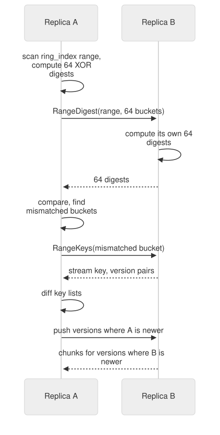
O(k) local scan per range + O(B) digest exchange + O(k_b) per mismatched bucket.O(log k) exchanges but must be built and maintained. At a few million keys per node, a full scan every 10 minutes is affordable and simpler.UP → SUSPECT after 3 s; SUSPECT → DOWN after 5 s; any successful RPC or ping marks it UP again.O(nodes) pings per second per node, O(nodes²) cluster-wide.DOWN; writes skip it and create hints; when it answers, hints replay. Costs repair work, never correctness.CHUNK_MOVE, delete the old file when no reader holds it.O(live bytes) per compacted segment; write amplification ≤ 2×.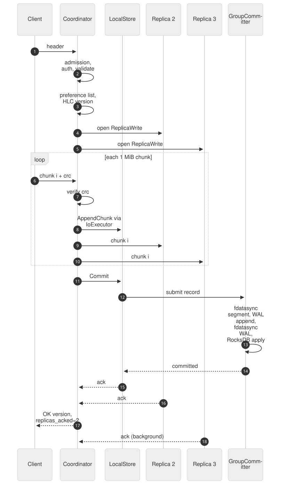
Here the coordinator is itself replica 1, so its own copy goes straight to LocalStore; the gRPC reactor that receives the stream is folded into the coordinator for readability.
PutObject stream to a node chosen by the Service VIP or endpoint list.RESOURCE_EXHAUSTED .VersionId from the HLC.DOWN replicas get hints immediately; fewer than W live → UNAVAILABLE (fail fast, nothing written).pwrite; after the last chunk verify the object CRC and submit a commit.OK(version) after W acks.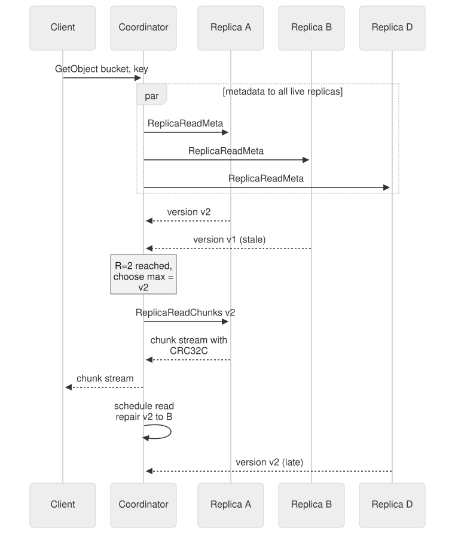
ReplicaReadMeta to all live replicas in parallel.VersionId; tombstone or not found → NOT_FOUND.DATA_LOSS or a stream error, continue from the failed chunk on another replica with the same version and enqueue repair.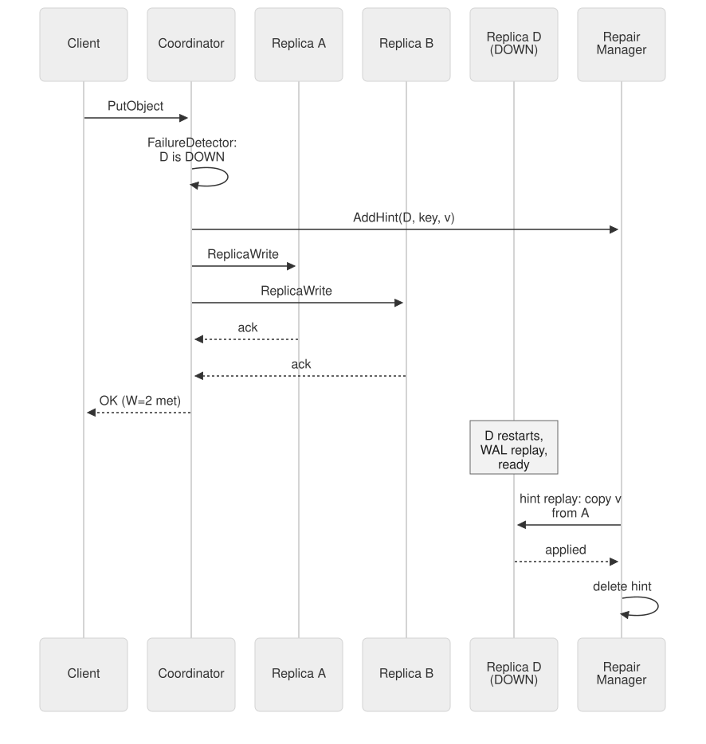
QUORUM, the tracker is impossible before any data is sent → UNAVAILABLE immediately.UNAVAILABLE; any replica that committed keeps the version (unknown outcome). Hints are recorded for failed ones.DEADLINE_EXCEEDED .request_id correlates the attempts in logs.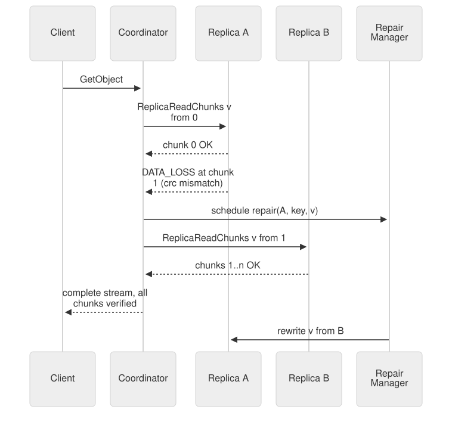
storage-node-2 is killed; peers mark it DOWN within ~5 s; writes create hints.Recovery::Run(): open RocksDB (applied_lsn = A); replay WAL records with lsn > A (verify CRC and referenced segment records, apply with LWW); truncate a torn tail record; find each active segment's valid tail; flush RocksDB; delete replayed WAL segments.SERVING; peers mark it UP.Recovery time ≈ RocksDB open + replay of the WAL tail since the last flush (≤ 512 MiB) + segment tail scan; ILLUSTRATIVE: a few seconds for ~100K records.
deadline − 50 ms, replica RPCs are cancelled by their own deadline.DEADLINE_EXCEEDED if W was not reached.vt.ReplicaWrite(tombstone=true, no chunks) to the preference list; W acks → OK.vt > stored, store the tombstone and mark old chunks garbage.NOT_FOUND; after 24 h the tombstone is purged.| Race | Scenario | Prevention |
|---|---|---|
| Two writers append to one segment | Both compute the same offset | fetch_add on the tail gives disjoint ranges |
| Two versions of one key applied concurrently | Both read "no current version" and both write | Stripe lock across read-compare-write; larger version wins regardless of arrival order |
| Read during compaction | Compactor deletes a segment mid-pread |
Reader holds shared_ptr<Segment>; file unlinked when the last ref drops |
| Ring update during lookup | Reader sees a half-built ring | Immutable snapshot published atomically |
| Read sees uncommitted data | Chunks written but not committed | Metadata, the only way to find chunks, is written after commit |
| Lock | Scope | Held during | Contention |
|---|---|---|---|
| Stripe mutex (1024) | Keys hashing to that stripe | One apply's read-compare-write | Very low |
| Shard mutex | One I/O shard | Sealing a full segment | Once per 1 GiB written |
| Group-commit queue mutex | Node | Push/pop of pending commits | Low |
| None | Chunk pwrite / pread |
— | Lock-free |
WriteBatch (objects + ring_index + gc + applied_lsn), with the WAL record as the commit point.(hlc, node_id).| Guarantee | Holds? | Condition |
|---|---|---|
| Read-your-writes | Yes | Same key, R + W > N, no concurrent writer, write returned OK |
| Monotonic reads | No (in general) | Two reads through different coordinators can hit different quorums |
| Linearizability | No | Leaderless quorums with LWW are not linearizable |
| Eventual consistency | Yes | Replicas converge after repair, given no new writes |
| Durability of acknowledged writes | Yes | Up to W − 1 replica disk losses before repair; any number of process crashes |
| Failed write has no effect | No | Unknown outcome: it may have committed on fewer than W replicas |
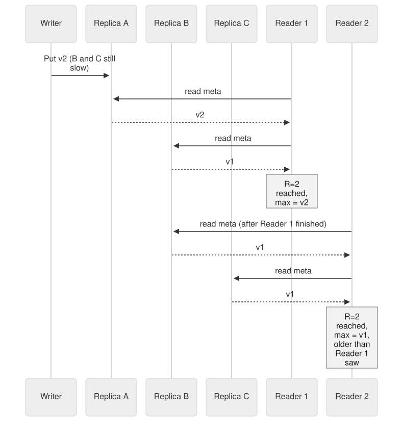
N − W.| Duplicate source | Effect | Handling |
|---|---|---|
| Client retries a Put | New version, same content | LWW supersedes; old chunks collected |
| Coordinator retries a replica write | Same version applied twice | if (, response says superseded |
| Hint replay after the write already arrived | Same version | Same idempotent apply |
| WAL replay of an applied record | Same version | Same idempotent apply |
Every path converges on one rule: apply version v only if it is greater than the stored version.
There is no distributed lock and no consensus. Coordination is replaced by: (1) deterministic placement (same ring everywhere, guarded by the epoch); (2) deterministic conflict resolution (total order on versions); (3) idempotent, commutative apply. Together these make each key a CRDT-like last-writer-wins register.
ReplicaWriter::SendChunk cannot send; the coordinator reads the next client chunk only after forwarding the previous one, so it stops reading.Memory per Put is bounded by flow-control windows, not object size. Admission control (512 in flight) and bounded I/O queues turn overload into fast RESOURCE_ errors; repair traffic is rate-limited and flagged is_repair.
Assume 5 nodes, N=3, W=2, R=2, and storage-node-2 dies.
SUSPECT at 3 s, DOWN at 5 s; failed RPCs or keepalive may detect it sooner; readiness removes it from the client Service.UNAVAILABLE); the client library retries elsewhere; in-flight Puts have unknown outcome.OK; a hint is stored.ONE.| Failure scenario | Why it happens | System behaviour | Recovery mechanism | Remaining risk |
|---|---|---|---|---|
| Storage node crash | OOM, node failure, kill | Writes go to remaining replicas + hints; reads use remaining replicas | Pod restart → WAL replay → hints → anti-entropy | Reduced redundancy until repaired |
| Two replicas of a key down | Correlated failures | UNAVAILABLE for QUORUM ops on those keys |
Restore a node | Availability loss (no consistency loss) |
| Network partition | Isolated node | Isolated node cannot reach W; others treat it as down | Partition heals; hints replay | None with strict quorum and W > N/2 |
| Slow replica (disk stall) | Cloud volume hiccup | Quorum met by faster replicas; slow one finishes or times out → hint | Hint replay | Tail latency if two replicas are slow |
| Partial write across replicas | Failures mid-Put | Error to client (unknown outcome) | Client retry; repair spreads whatever committed | A failed write may become visible later |
| Partial write on one replica | Crash mid-Put | No WAL commit record → version never applied there | Hint replay from another replica | None |
| Torn WAL tail | Crash during WAL append | Truncate the last record | Normal startup | None (never acknowledged) |
| WAL corruption mid-log | Media corruption | Refuse to start; alert | Wipe node; rebuild from peers | None if peers are healthy |
| Chunk corruption at rest | Bit rot | Read served from another replica; chunk marked bad | Repair rewrites from a healthy replica | Loss only if all copies are corrupt |
| Disk full | ENOSPC |
Writes fail RESOURCE_EXHAUSTED; node read-only but serves reads |
Compaction, add capacity | Writes rely on other two replicas |
| Client deadline | Slow quorum | DEADLINE_EXCEEDED; background work continues |
Client retry | Unknown outcome for Puts |
| gRPC channel failure | Connection reset | Reconnect with backoff; fail over to other replicas | Automatic | None |
| Ring epoch mismatch | Config rollout in progress | Replica returns ABORTED |
Client retries; rollout completes | Brief unavailability (by design) |
| Repair overloads foreground | Large rebuild | Token bucket caps repair bandwidth | Tune the rate | Slower repair |
There is no database server, Kafka, or Redis in this system; "checkpoint recovery" here means WAL replay plus RocksDB flush points.
applied_lsn = A, ring_epoch, node_id. Refuse to start if node_id differs from the pod's identity (wrong disk attached).lsn > A: verify CRC; for PUT_COMMIT verify every referenced segment record (magic, header CRC, key hash, version, index); apply with the same idempotent LWW logic as live traffic.applied_lsn), delete replayed WAL segments.applied_lsn = 0).(key, version) lists and copies each version via ReplicaReadChunks plus a local write marked is_repair.On SIGTERM (after a 5 s preStop sleep): report NOT_SERVING; wait up to 20 s for in-flight requests (new ones get UNAVAILABLE); drain the group-commit queue (final fsyncs); flush RocksDB; close the WAL and RocksDB; exit. termination is 30.
W − 1 disk losses among their replicas before repair; no corrupt chunk is returned without an error; replicas converge.| Step | Latency | CPU | Notes |
|---|---|---|---|
| Client → coordinator transfer | ~0.5 ms | gRPC framing, protobuf parse | One copy into the protobuf bytes field |
| CRC32C verify at coordinator | ~6 µs | 64 KiB at ~10 GB/s | Negligible |
| Forward to 2–3 replicas | ~0.5–1 ms | Serialization per replica (baseline) | Byte forwarding removes it |
Replica pwrite |
~0.1 ms (page cache) | Syscall + memcpy | |
Group commit fdatasync (segment + WAL) |
1–10 ms | Mostly waiting | Dominant term; depends on the disk |
| RocksDB apply | ~50 µs | Memtable insert | |
| Total (typical) | ~5–20 ms |
64 KiB Get, R=2: metadata fan-out ~1 ms + pread (page cache ~50 µs, SSD miss ~0.1–0.3 ms) + CRC + stream ~1 ms → ~2–5 ms.
1 MiB objects move ~16× the bytes: transfer and CRC/copy CPU scale linearly; fsync cost does not.
A 200 ms p95 budget is therefore generous; the risk is queueing: I/O pool saturation, fsync stalls on cloud volumes (which can spike to 50–100 ms), and repair traffic competing with foreground I/O.
| Path | Algorithmic cost | Practical bottleneck |
|---|---|---|
| Ring lookup | O(log V) |
Never (microseconds) |
| Checksums | O(bytes) |
Negligible with hardware CRC32C |
| Data copies | O( |
memcpy CPU on large objects (main user-space term) |
| Small-file I/O (baseline) | O(chunks) syscalls + filesystem metadata |
Kernel CPU and IOPS |
| fsync | O(commits) baseline vs O(batches) optimized |
Disk flush latency |
| RocksDB | O(log n) per op |
Compaction CPU at high write rates (not at this load) |
| Threads | Baseline: one thread per active RPC | Context switches at 1,000 sessions |
OPT-1: Append-only segments instead of one file per chunk.
open(O_CREAT) + write + fsync + close + parent-directory fsync per chunk: ≥ 5 syscalls and filesystem journaling per chunk.fetch_add + one pwrite per chunk; files stay open.perf stat, strace -c), user vs sys CPU (pidstat -u), flame-graph share of ext4/xfs functions.OPT-2: Group commit and a single authoritative WAL.
disableWAL=true + atomic_flush.O(writes) to O(batches); no second log write.objstore_group_commit_batch_size , fdatasyncs per second, CPU per op.OPT-3: Pooled, zero-copy read buffers.
std::vector<char> per chunk read, pread into it, copy into protobuf, gRPC copies again: two user-space copies and a malloc/free per MiB.pread into a pooled 1 MiB buffer wrapped in a grpc::Slice whose destroy callback returns it to the pool; send via grpc::ByteBuffer .OPT-4: Forward serialized chunks to replicas.
OPT-5: Callback gRPC server with a bounded I/O pool (measured separately).
IoExecutor + admission control (512).OPT-6: RocksDB tuning. Bloom filters, 256 MiB block cache, LZ4. Small impact at this load.
| Consumer | Bound |
|---|---|
| In-flight chunk buffers | Bounded by the pool (e.g., 256 × 1 MiB = 256 MiB) |
| RocksDB block cache + memtables | 256 MiB + 3 × 64 MiB |
| gRPC per-stream buffers | Flow-control window |
| Page cache | Whatever the container limit allows; serves hot Gets |
| Operation (object size S, N=3) | Bytes on the network |
|---|---|
| Put, coordinator is a replica (probability 3/5 with 5 nodes) | S + 2S |
| Put, coordinator is not a replica | S + 3S |
| Get | R small metadata responses + S (replica → coordinator, if remote) + S (to client) |
Average Put amplification ≈ 1 + ( (ILLUSTRATIVE). A replica-aware client would remove the extra hop (future improvement).
Throughput scales with nodes while keys are uniform; each node does ~N / nodes of the replica work. Limits: full-mesh heartbeats (O(nodes²)), anti-entropy cost per node, manual topology changes.
Status: this is the intended plan. None of these tests or benchmarks has been run, and the result tables are blank. No number here is a measurement.
| Test | Objective | Execution | Expected / assertion |
|---|---|---|---|
| Unit: ring placement | Correct, balanced lists | 1M random keys, 5 nodes × 128 vnodes | 3 distinct nodes per list; share within ±10% of 60%; a 6th node moves ≈ 1/6 of ownership |
| Unit: HLC | Monotonic, causal | Fake wall clock that goes backward | Strictly increasing; Observe(x) then Now() > x |
| Unit: WAL codec | Encode/decode, torn-tail detection | 10,000 records, truncate at a random byte | Complete records returned; replay stops cleanly at the torn record |
| Unit: LWW apply | Idempotent, order-independent | v1 < v2 < v3 in all 6 orders, each twice | Final version always v3; superseded chunks garbage |
| Integration: single node | Real RocksDB and segments | Objects of 0 B, 1 B, 1 MiB, 1 MiB + 1 B, 64 MiB | Bytes and CRCs identical; NOT_FOUND after delete |
| API validation | Contract enforcement | Bad bucket, out-of-order chunk, wrong CRCs, missing header | INVALID_ARGUMENT / DATA_LOSS; nothing committed |
| Crash consistency | No acknowledged write lost | _exit(1) after pwrite, segment sync, WAL append, WAL sync, RocksDB apply; 50× per point |
Every acknowledged Put readable with correct CRC; unacknowledged Puts absent or complete, never partial |
| Concurrency: same-key writers | Convergence | 50 threads overwrite one key | All 3 replicas hold the same version, byte-identical to one writer |
| Concurrency: read during write | No torn reads | Overwrite 16 MiB in a loop while reading | Every read's CRC matches a written version |
| Sanitizers | No races or memory errors | TSan and ASan builds of concurrency tests | Zero reports |
| Failure: node kill | Availability | Delete a pod during the S1 workload | Quorum ops keep succeeding; errors limited to the detection window |
| Failure: partition | No acknowledged divergence | NetworkPolicy isolates one node for 2 min | Isolated node's writes fail; replicas converge after heal |
| Failure: corruption | Integrity pipeline | Flip a byte in a sealed segment | Correct bytes returned; repair rewrites; scrubber reports |
| Recovery: hints | Hinted repair | Stop node C, write 1,000 objects, start C | C holds all 1,000; hints CF empty |
| Recovery: empty-disk rebuild | Anti-entropy | Replace C's PVC with an empty one | Digests match within the expected time |
| Stress / soak | Graceful overload; no leaks | Ramp to 2,000 ops/s; 8 h overwrite-heavy | Retryable errors only; flat RSS, disk, WAL size, p99 |
The test that best proves the WAL claim is the crash-consistency test with named crash points.
| Parameter | Primary workload (W-MIX) |
|---|---|
| Operation mix | 70% GetObject, 30% PutObject |
| Object sizes | 4 KiB (40%), 64 KiB (50%), 1 MiB (10%); mean ≈ 136 KiB |
| Keys | Uniform over 100,000 preloaded keys; Puts overwrite uniformly chosen keys |
| Concurrency | 1,000 logical client sessions over 64 gRPC channels |
| Arrivals | Aggregate open-loop Poisson at 167 ops/s; ≤ 1 request in flight per session |
| Consistency | QUORUM (N=3, W=2, R=2) |
| Warm-up / steady / runs | 3 min (discarded) / 10 min / 3 runs per configuration |
Tools: the custom C++ load generator objbench (streaming gRPC, open-loop arrivals, HdrHistogram, latency from the intended send time); ghz for unary HeadObject checks; fio for the disk's fsync floor; Google Benchmark for micro-benchmarks; cgroup cpu.stat, pidstat, perf for CPU; Prometheus and Grafana for server-side series. k6, JMeter, and wrk are not used because they lack first-class streaming-gRPC support.
| # | Scenario | Purpose |
|---|---|---|
| S1 | Claim run: W-MIX, 1,000 sessions, 167 ops/s, 10 min | 10K ops/min, p95 < 200 ms, errors < 0.1%, zero CRC failures |
| S2 | CPU A/B: baseline vs optimized builds | ~25% CPU per op reduction |
| S3 | Ablation: optimized minus one OPT at a time | Attribution |
| S4 | Node failure: kill node 2 at minute 4, restart at 7 | Availability and repair |
| S5 | Saturation ramp 100 → 2,000 ops/s | Find the knee |
| S6 | Write-heavy: 100% Put, 64 KiB | Group commit effectiveness |
| S7 | Large objects: 16 MiB | Streaming and backpressure |
| S8 | Replication sweep: (1,1,1), (3,1,1), (3,2,2), (3,3,1) | Cost of replication and quorum |
| S9 | Hot keys: Zipf(0.99) | Stripe-lock and replica hotspots |
| S10 | Burst: 1,000 requests at once | Spike handling (literal simultaneity) |
| S11 | Corruption injection | Zero corrupt bytes returned |
| Aspect | Baseline | Optimized |
|---|---|---|
| Data layout | File per chunk + directory fsync | Append-only segments (OPT-1) |
| Commit | fsync per write; RocksDB WAL sync=true |
Group commit; single WAL (OPT-2) |
| Read buffers | New vector + copy | Pooled buffers, zero-copy (OPT-3) |
| Replica forwarding | Re-serialize per replica | Forward bytes (OPT-4) |
| Server model | Sync gRPC | Callback + IoExecutor + admission (OPT-5, separate row) |
| Checksums, replication, workload, hardware | Identical | Identical |
Rules: same offered load (167 ops/s) in both; fresh volume and identical preload; three runs, median and min–max; identical CPU limits with Guaranteed QoS and near-zero throttling; the headline I/O figure uses OPT-1 to OPT-4 with the server model held constant.
Throughput (successful ops/min), p50/p95/p99 per operation and size class (Get = time to last byte), error rate by code, CPU per op (Δ cgroup CPU-µs / Δ successful ops), user vs sys CPU, memory, disk IOPS, fsyncs/s and batch size, network throughput, hints pending and repair bytes/s, recovery time.
Each pod has its own PersistentVolumeClaim, so a rescheduled storage-node-2 gets its old disk back. Pod anti-affinity spreads pods across Kubernetes nodes, so one machine failure takes out at most one replica.
# Representative only; not created in this repository.FROM ubuntu:24.04 AS buildRUN apt-get update && apt-get install -y build-essential cmake ninja-build git pkg-configWORKDIR /srcCOPY . .RUN cmake -B build -G Ninja -DCMAKE_BUILD_TYPE=Release -DOBJSTORE_IO_MODE=optimized \ && cmake --build build --target storage-node FROM ubuntu:24.04RUN useradd -u 10001 objstore && mkdir /data && chown objstore /dataCOPY --from=build /src/build/storage-node /usr/local/bin/storage-nodeUSER objstoreEXPOSE 7000 9100ENTRYPOINT ["/usr/local/bin/storage-node"]Port 7000 serves gRPC (both services); 9100 serves /metrics.
| Object | Purpose |
|---|---|
Stateful (replicas 5) |
Stable pod names → stable node ids and ring tokens |
volume |
One PVC per pod, reattached on reschedule |
Headless Service storage- |
DNS per pod for peer channels |
Service storage- (ClusterIP) |
Client entry point across ready pods |
Config |
N, W/R defaults, vnodes, ring epoch, node list, limits |
Secret storage- |
Client and internal tokens |
PodDisruptionBudget |
max |
| Pod anti-affinity | Prefer one storage pod per Kubernetes node |
Representative StatefulSet (documentation only):
apiVersion: apps/v1kind: StatefulSetmetadata: name: storage-node namespace: storagespec: serviceName: storage-node replicas: 5 podManagementPolicy: Parallel selector: matchLabels: { app: storage-node } template: metadata: labels: { app: storage-node } spec: terminationGracePeriodSeconds: 30 affinity: podAntiAffinity: preferredDuringSchedulingIgnoredDuringExecution: - weight: 100 podAffinityTerm: topologyKey: kubernetes.io/hostname labelSelector: { matchLabels: { app: storage-node } } containers: - name: node image: objstore:opt args: ["--config=/etc/objstore/config.yaml", "--data=/data"] env: - name: POD_NAME valueFrom: { fieldRef: { fieldPath: metadata.name } } - name: CLIENT_TOKEN valueFrom: { secretKeyRef: { name: storage-token, key: client } } ports: - { name: grpc, containerPort: 7000 } - { name: metrics, containerPort: 9100 } readinessProbe: grpc: { port: 7000 } periodSeconds: 5 livenessProbe: grpc: { port: 7000, service: liveness } periodSeconds: 10 failureThreshold: 6 startupProbe: grpc: { port: 7000, service: liveness } periodSeconds: 5 failureThreshold: 60 resources: requests: { cpu: "2", memory: 4Gi } limits: { cpu: "2", memory: 4Gi } volumeMounts: - { name: data, mountPath: /data } - { name: config, mountPath: /etc/objstore } volumes: - name: config configMap: { name: storage-config } volumeClaimTemplates: - metadata: { name: data } spec: accessModes: ["ReadWriteOnce"] resources: { requests: { storage: 50Gi } }Representative configuration:
replication_factor: 3default_write_consistency: QUORUMdefault_read_consistency: QUORUMvnodes_per_node: 128ring_epoch: 1nodes: [storage-node-0, storage-node-1, storage-node-2, storage-node-3, storage-node-4]io_threads: 8io_shards: 4max_inflight_requests: 512group_commit_max_records: 256group_commit_max_wait_ms: 2repair_rate_mib_per_s: 50tombstone_grace_hours: 24heartbeat_interval_ms: 1000suspect_after_ms: 3000down_after_ms: 5000| Probe | Meaning |
|---|---|
| Startup | gRPC health liveness; gives WAL recovery up to 5 minutes |
| Readiness | SERVING only after recovery completes, disk is writable, and the node is not draining |
| Liveness | Event loop responsive; does not depend on peers (a cluster-wide problem must not restart every pod) |
replicas, add the node to the ConfigMap list, bump ring_epoch, roll the StatefulSet, let anti-entropy move data.POD_NAME (derives node id and ring tokens), CLIENT_TOKEN and INTERNAL_TOKEN (from the Secret), OBJSTORE_LOG_LEVEL .One JSON line per request at info (sampled for Gets under load) and one per repair action. Keys are logged as hashes (object names can be sensitive). request_id is generated by the client, propagated by the coordinator in replica RPC metadata, and logged on every node.
{"ts":"2026-03-18T10:21:07.412Z","level":"info","node":3,"rpc":"PutObject","request_id":"9b1f...","bucket":"photos","key_hash":"0x5d1c...","version":"0000018f3a2b4c5d0001-3","size":65536,"replicas":[2,3,4],"acked":2,"status":"OK","latency_ms":11.8}| Metric | Type | Use |
|---|---|---|
objstore_ |
Counter | Throughput and errors |
objstore_ |
Histogram | Server-side p50/p95/p99 |
objstore_ |
Histogram | Slow replica detection |
objstore_ |
Counter | Availability problems |
objstore_, objstore_ |
Gauge / Counter | Admission headroom, overload |
objstore_ |
Gauge | I/O pool saturation |
objstore_ |
Histogram | Group commit effectiveness |
objstore_ |
Histogram | Disk health |
objstore_ |
Counter | Integrity (ingest, read, scrub) |
objstore_, objstore_ |
Gauge / Counter | Repair backlog and activity |
objstore_ |
Gauge | Replica divergence |
objstore_ |
Gauge | Membership view |
objstore_wal_bytes, objstore_ |
Gauge | Space and recovery-time health |
# Overall p95 by RPChistogram_quantile(0.95, sum by (le, rpc) (rate(objstore_request_duration_seconds_bucket[5m]))) # Operations per minute (client-visible, successful)sum(rate(objstore_requests_total{rpc=~"PutObject|GetObject",code="OK"}[1m])) * 60 # CPU seconds per operation across the clustersum(rate(process_cpu_seconds_total{job="storage-node"}[5m])) / sum(rate(objstore_requests_total{rpc=~"PutObject|GetObject",code="OK"}[5m]))Dashboards: overview (ops/min, errors, p95/p99 by RPC and size class, in-flight), storage (fsync latency, batch size, queue depth, WAL size, live ratio), cluster health (peer matrix, quorum failures, hints, repair), integrity (CRC failures, scrubber progress).
| Alert | Condition | Why |
|---|---|---|
| NodeDown | objstore_ from ≥ 2 peers for 1 min |
Reduced redundancy |
| QuorumFailures | quorum failure rate > 0.01/s for 5 min | Availability impact |
| CRCFailure | any increase outside ingest | Corruption at rest or in memory |
| HintsBacklog | objstore_ for 15 min |
Repair not keeping up |
| FsyncSlow | fsync p99 > 100 ms for 10 min | Disk degradation |
| LatencySLO | p95 > 200 ms for 10 min | SLO breach |
| DiskFull | free space < 15% | Writes will fail |
A reasoning procedure built from the documented signals:
| Symptom | First check | Likely cause | Action |
|---|---|---|---|
| Put p95 rising | objstore_, batch size |
Disk stall on a replica | Check objstore_; replace the volume if one peer is slow |
UNAVAILABLE errors |
objstore_peer_state, quorum failures |
Two replicas of some keys down | Restore a node; check PDB and anti-affinity |
RESOURCE_EXHAUSTED |
In-flight, admission rejections, I/O queue depth | Overload | Back off clients; investigate slow disk; consider capacity |
| Hints backlog growing | Hints pending per target | A node down or repair rate too low | Bring node back; tune the 50 MiB/s cap |
| CRC failure alert | where label |
Disk or memory corruption | Confirm repair rewrote the chunk; inspect hardware |
| A key reads stale | Anti-entropy mismatches; read repair | Divergence not yet repaired | Wait one cycle or trigger repair; recall monotonic reads are not guaranteed |
Trace a single request across nodes by its request_id.
This is a speaking script for explaining the whole project continuously in about 30 minutes. Each segment has what to say (written to be spoken aloud), the technical details behind the words, the diagram to draw, the points you must not forget, the most likely interruption, and a transition into the next segment.
Honesty rule for the whole talk: the four resume figures (1,000 concurrent requests, 10K operations/min, < 200 ms p95, ~25% CPU reduction) are benchmark targets, not measured results, and no code, test, or benchmark has been run. Say so the first time you mention a number.
| Time | Segment |
|---|---|
| 0–2 min | 1. Problem statement and motivation |
| 2–5 min | 2. Requirements, scope, and technology stack |
| 5–10 min | 3. High-level design and architecture |
| 10–15 min | 4. Low-level design: inside one storage node |
| 15–19 min | 5. Core algorithms and data structures |
| 19–23 min | 6. APIs, storage layout, concurrency, and consistency |
| 23–26 min | 7. Failure handling and recovery |
| 26–28 min | 8. Performance engineering and benchmarking |
| 28–30 min | 9. Trade-offs, limitations, and future improvements |
What to say:
"This project is a distributed object store, a small version of the data plane behind systems like Amazon S3, built in the style of Amazon's Dynamo paper. Applications store opaque blobs, things like images, model files, or backups, from a few kilobytes up to 64 MiB, and read them back by bucket and key.
One disk is a single point of failure, and copying files around by hand gives no integrity guarantee and no automatic recovery. So the system has to do six things: spread objects across nodes without a central lookup table; keep N copies and keep working when a node is down; detect silent corruption like bit rot with checksums; survive a crash without losing acknowledged writes; bring lagging or replaced replicas back to N copies automatically; and handle many concurrent clients, including concurrent writes to the same key.
I built it in C++ because the point was to make I/O, memory copies, and threading explicit and measurable. In one project it covers consistent hashing, quorum replication, hinted repair, anti-entropy, write-ahead logging, crash recovery, checksums, and high-concurrency I/O."
Technical details to understand:
OK for; it must survive crashes.Diagram to draw: one box "client" and five boxes "node 0–4" in a ring, to set up the next segment.
Key points to remember:
Likely interruption: "Is this S3-compatible?" No. S3 HTTP compatibility, multipart upload, user-visible versioning, IAM, encryption at rest, erasure coding, cross-region replication, linearizability, and automatic rebalancing are all out of scope.
Transition: "Let me make the requirements precise and then explain the tools I chose."
What to say:
"Functionally: PutObject streams an object up to 64 MiB in 1 MiB chunks. GetObject streams the latest version back, verifying checksums. HeadObject returns metadata only. DeleteObject writes a tombstone that is garbage-collected later. ListObjects is a best-effort scatter-gather. The replication factor N defaults to 3, and every request can choose a consistency level: ONE, QUORUM, or ALL. Every chunk has a CRC32C checksum. Each node recovers by replaying its write-ahead log. Lagging replicas are repaired asynchronously. And any node can coordinate any request.
Non-functionally: an acknowledged write survives any single node crash; with N=3, W=2, R=2 reads and writes continue with one replica down; no corrupt chunk is ever returned without an error. The performance numbers, 1,000 concurrent client sessions, 10,000 operations per minute, which is about 167 per second, under 200 milliseconds p95, and about 25% lower CPU per operation, are benchmark targets.
The stack: C++20, because the CPU optimization is literally about syscalls, copies, and allocations, which a garbage-collected runtime would hide. gRPC with Protocol Buffers for both client and node-to-node traffic, because I get HTTP/2 streaming, flow control, and deadlines for free. RocksDB as an embedded metadata store, because I need fast point lookups, atomic batches, and ordered iteration. CRC32C via Abseil, which is hardware-accelerated. xxHash64 for ring placement. And Kubernetes StatefulSets with persistent volumes, because storage nodes need stable identities and their own disks."
Technical details to understand:
Diagram to draw: a two-column "in scope / out of scope" list, or skip.
Key points to remember:
Likely interruption: "Why not Go or Java?" They'd hide allocation and copying behind a runtime, and the CPU claim is precisely about removing copies and syscalls, so the language needed to make them explicit.
Transition: "Here's how the pieces fit together across the cluster."
What to say:
"Every node runs the same binary and plays two roles. As a coordinator, for requests it receives, it computes which nodes should hold the key, fans the request out, waits for a quorum, and responds. As a replica, for keys it owns, it persists chunks and metadata locally and takes part in repair. There is no master, no metadata server, and no ZooKeeper.
Placement uses consistent hashing. Picture a 64-bit ring. Each physical node gets 128 points on it, called virtual nodes, so 640 points for five nodes. A key is hashed onto the ring, and its replicas are the first three distinct physical nodes clockwise. That list is the preference list. Every node computes the same ring from the same node list plus a ring epoch number, so no lookup service is needed.
For a Put, the client streams to any node through a Kubernetes Service. That coordinator stamps a version, forwards each chunk to all three replicas in parallel, and responds once two of them have durably stored it. The third finishes in the background. For a Get, the coordinator asks all live replicas for metadata, proceeds at the first two answers, picks the highest version, and streams the chunks from one replica, preferably itself.
Inside each node there's a gRPC server hosting two services on one port: the client-facing ObjectStore and the internal ReplicaService; a coordinator; a LocalStore that writes chunk data to append-only segment files, logs commits in a write-ahead log, and keeps metadata in RocksDB; a RepairManager for hints, read repair, and anti-entropy; and a FailureDetector that pings peers every second.
Data ownership: chunk data and metadata both live on the N replicas, replicated by the same quorum write. There is no global metadata store. Hints are owned by the coordinator that saw a replica miss a write. The ring is derived state."
Technical details to understand:
LocalStore directly through the same ReplicaEndpoint interface, with no network hop.maxUnavailable 1 .Diagram to draw: the ring with five nodes and a key's three replicas highlighted; then a client → coordinator → three replicas fan-out with "respond at 2 acks".
Key points to remember:
Likely interruption: "How does a client find the right node?" It doesn't need to: any node can coordinate. The client uses the Service VIP or rotates over endpoints; the receiving node computes the preference list. The cost is an extra hop when the coordinator isn't a replica, about 3.4× network amplification per Put on average (ILLUSTRATIVE).
Transition: "The interesting engineering is inside a single node, in how a replica makes a write durable."
What to say:
"The coordinator talks to replicas through a ReplicaEndpoint interface with a local and a remote implementation, so its logic is identical either way. LocalStore is a facade over three things: the segment store, the write-ahead log with its group committer, and the RocksDB metadata store.
Why separate data from metadata? Metadata is small, read on every request, needs atomic multi-key updates and ordered iteration, so RocksDB fits. Chunk data is large and immutable; putting multi-megabyte values into an LSM tree would rewrite them over and over during compaction. So data goes into 1 GiB append-only segment files, and metadata stores ( for each chunk.
The replica write path: for each chunk, verify the CRC, reserve space in the segment with an atomic fetch_add on the segment's tail offset, and pwrite at that offset. After the last chunk, verify the combined object CRC and submit a commit to the group committer. That single thread takes a batch of up to 256 commits or waits up to 2 milliseconds, then: fdatasyncs the touched segments, appends the commit records to the WAL, fdatasyncs the WAL, which is the commit point, applies the metadata to RocksDB, and only then acknowledges.
The ordering is the crucial part: data must be durable before the commit record that references it. Otherwise a crash could leave a committed record pointing at garbage.
Threading: gRPC uses its callback API, so a small pool of callback threads handles every stream and never blocks. All disk I/O goes to an 8-thread I/O pool; fsyncs go to the single committer thread. Admission control caps each node at 512 in-flight client requests, and every queue is bounded, so overload becomes a fast RESOURCE_ error instead of unbounded memory growth."
Technical details to understand:
disableWAL=true); consistency after a crash comes from atomic_flush plus an applied_lsn written into every batch.std::atomic<std::shared_ptr<const Ring>> : lock-free reads, copy-on-write updates.shared_ptr<Segment> ), so the compactor can't delete a file a reader is using.Diagram to draw: inside one node: gRPC reactor → coordinator → LocalStore → (IoExecutor → segment files) and (GroupCommitter → WAL → RocksDB). Then the five-step group-commit loop.
Key points to remember:
Likely interruption: "Why your own WAL when RocksDB has one?" A Put touches two stores, segment files and RocksDB, and RocksDB's WAL only covers RocksDB. I need one commit point across both. Since my WAL is authoritative, RocksDB's would log every change twice.
Transition: "Several algorithms make this correct and fast; let me go through the core ones."
What to say:
"First, consistent hashing with virtual nodes. Tokens are kept in a sorted vector; a lookup is a binary search for the first token after the key's hash, then a short clockwise walk skipping vnodes of physical nodes already chosen, until I have three distinct nodes. That's O(log V) with V = 640, about ten comparisons. Virtual nodes smooth the load to within a few percent and spread a failed node's load over all survivors. When a sixth node joins, it takes over about one sixth of primary ownership, not almost everything as modulo hashing would.
Second, quorum replication. With N=3, W=2, R=2, R plus W is greater than N, so every read quorum overlaps every write quorum in at least one replica. A read after a successful write sees it, as long as no concurrent write interferes.
Third, versions and last-writer-wins. Each coordinator stamps a version made of a hybrid logical clock value and its node id. The HLC is wall-clock milliseconds shifted left 16 bits plus a logical counter. It stays close to real time but never goes backwards, and it advances when nodes exchange timestamps in pings and write headers. Every replica applies a version only if it is greater than the stored one, under the key's stripe lock. That single rule makes apply idempotent and order-independent, so retries, hint replays, and WAL replays are all safe without dedup tables. The honest downside: two concurrent writes to the same key, one silently loses.
Fourth, group commit. fsync has a mostly fixed cost; if 50 writers share one fsync, each pays one fiftieth. Throughput scales with batch size, and each write still waits about one fsync plus the batching delay.
Fifth, lock-free append: fetch_add reserves a disjoint byte range and pwrite writes at that offset, so concurrent writers never need a lock. A crashed writer just leaves an unreferenced hole.
And finally anti-entropy with bucketed digests: for each range, both replicas split their keys into 64 buckets and compute an XOR of hashes of key, version, and tombstone flag per bucket. They exchange digests; only mismatched buckets exchange key lists."
Technical details to understand:
Now(): if wall time > last, use it with counter 0; otherwise increment the counter. Observe(remote) takes the max.Diagram to draw: the ring with a key's hash and the clockwise walk; then a small timeline "writers W1…W50 → one fsync → all acked".
Key points to remember:
O(log V); R + W > N; LWW on (hlc, node_id); apply only if newer.fetch_add + pwrite needs no lock.Likely interruption: "Is R + W > N strong consistency?" No. It gives read-your-writes for a completed write without concurrent writers. It is not linearizable: during an in-flight write, two reads through different coordinators can see new then old.
Transition: "Now the contracts: the API, the on-disk formats, and the exact consistency guarantees."
What to say:
"The API is gRPC only. PutObject is client-streaming: a header message first, then chunks in order, each with its CRC. GetObject is server-streaming: a metadata message, then chunks, and it supports from_chunk to resume a broken download. Status codes are precise: DATA_LOSS for checksum failures, UNAVAILABLE when a quorum is impossible, DEADLINE_ when the quorum isn't reached in time, RESOURCE_ for overload, and ABORTED for a ring-epoch mismatch. Clients must set a deadline; the coordinator gives replicas the remaining time minus 50 milliseconds so they time out first.
On disk: segment records have a self-describing header with magic number, header CRC, chunk index, version, key hash, payload length, and payload CRC, padded to 4 KiB. RocksDB has column families for latest-version object metadata, a ring-ordered index for anti-entropy, dead chunks for compaction, segment accounting, durable hints, and node state like applied_lsn and ring_epoch. WAL records carry an LSN, a type, and a CRC.
Inside a node, races are handled with the atomic tail for appends, the stripe lock for version comparison, reference-counted segments for compaction, and the immutable ring snapshot. No lock is ever held across a network call or an fsync.
Across the cluster there is no distributed lock and no consensus. Coordination is replaced by three properties: deterministic placement, deterministic conflict resolution, and idempotent, commutative apply. That makes each key behave like a last-writer-wins register CRDT.
The guarantees, stated precisely: read-your-writes yes; durability of acknowledged writes yes; eventual consistency yes. Monotonic reads no; linearizability no; and a failed write is not guaranteed to have no effect. If a Put returns UNAVAILABLE or DEADLINE_, the outcome is unknown; it may have committed on one replica and become visible later. The client retries, which writes a newer version with the same content, so the end state is correct."
Technical details to understand:
^[a-z0-9-]{3,63}$ , key 1–1024 bytes, size ≤ 64 MiB, contiguous chunk indexes.ReplicaService; TLS off by default in benchmarks (must be disclosed).Diagram to draw: the segment record layout box, and a small table of guarantees (yes/no).
Key points to remember:
from_chunk resume.Likely interruption: "Two clients write the same key at once through different nodes. Who wins?" The larger (hlc, node_id). All replicas pick the same winner, and the other write is lost. With close clocks the winner is effectively arbitrary; that's documented LWW behaviour.
Transition: "Let me now walk through failures, because that's where the WAL and the repair mechanisms earn their place."
What to say:
"Take one node dying in a five-node cluster. Peers stop getting ping replies; it's SUSPECT after 3 seconds and DOWN after 5. Requests it was coordinating break, and the client library retries on another node. For keys it owns, about 60% of all keys, writes go to the other two replicas, W=2 is still met, and the coordinator stores a hint: 'node X should have key K at version v'. Reads use the two live replicas. During the outage those keys have two copies, so a second failure among the same replicas would block quorum writes for them.
When the node restarts with its disk, it runs WAL recovery: open RocksDB and read applied_lsn; replay WAL records after it, verifying each record's CRC and that the referenced segment records really hold the expected key, version, and chunk; apply them with the same idempotent rule as live traffic; truncate a torn record at the very tail, because it was never acknowledged; refuse to start if there's a bad record in the middle of the log; find each active segment's valid tail; flush; and only then report ready. Then peers replay hints at a rate-limited 50 MiB/s, and anti-entropy confirms convergence.
If the disk is gone, the operator replaces the volume, the empty node finds every anti-entropy bucket mismatched, and it streams its ranges back from peers, rate-limited. ILLUSTRATIVE: 200 GiB at 50 MiB/s is about 68 minutes.
Corruption: a bit flip in a sealed segment is caught by the CRC on read or by the background scrubber. The replica returns DATA_LOSS for that chunk, the coordinator continues from that chunk on another replica, and repair rewrites a fresh copy.
There are three repair layers because each is a safety net for the one before: hints fix what we know was missed, read repair fixes what readers notice, anti-entropy fixes everything else. A failure-detector false positive only costs extra hints, never correctness, because liveness never changes placement."
Technical details to understand:
UNAVAILABLE for those keys.NOT_SERVING, drain up to 20 s, final fsyncs, flush RocksDB.Diagram to draw: a timeline: node dies → hints accumulate → node restarts → WAL replay → ready → hint replay → anti-entropy.
Key points to remember:
Likely interruption: "Can an acknowledged write be lost?" Not by crashes, because it's fsynced on two replicas. It can be lost if both acknowledging disks die before repair copies it to the third, which is why zone-aware placement and faster repair matter.
Transition: "With correctness established, here's where the time and CPU go, and how I'd prove the numbers."
What to say:
"For a 64 KiB Put, the dominant cost is the group-commit fsync on the second-fastest replica, roughly 1 to 10 milliseconds depending on the disk; the total is typically 5 to 20 milliseconds. Those are illustrative estimates. So a 200 millisecond p95 is generous; the risk is queueing and fsync stalls on cloud volumes.
The CPU optimizations, which make up the 25% target, are four. Append-only segments instead of one file per chunk, which removes per-chunk file creation, fsync, and directory fsync. Group commit and a single WAL, which turns flushes from one per write into one per batch. Pooled, zero-copy read buffers handed straight to gRPC. And forwarding the already-serialized chunk bytes to replicas instead of re-serializing per replica. The callback server with a bounded I/O pool is a fifth change, but it changes the concurrency model, so I measure it separately to avoid inflating the I/O claim.
On the numbers: 10,000 operations per minute is about 167 client operations per second, 70% reads, with object sizes of 4 KiB, 64 KiB, and 1 MiB. '1,000 concurrent' means 1,000 client sessions. By Little's law, 167 per second at about 30 milliseconds is only about five requests in flight, so I'd never claim 1,000 simultaneous RPCs; a separate burst test does that. I'd measure latency from the intended send time to avoid coordinated omission, report it per size class, and compute CPU per operation from cgroup counters at the same offered load, with an ablation."
Technical details to understand:
cpu.stat usage / Δ successful ops. ILLUSTRATIVE: 1,600 → 1,200 µs = 25%.fio fsync test of the data volume establishes the latency floor.Diagram to draw: a latency bar for a 64 KiB Put with "fsync batch" as the widest segment.
Key points to remember:
Likely interruption: "10K ops/min is low for storage." It's a durability-first configuration: every write fsynced on two of three replicas with end-to-end checksums. The saturation ramp would show the real ceiling, reported separately.
Transition: "Let me close with the trade-offs I made and what I'd change."
What to say:
"The main trade-off is leaderless quorums with last-writer-wins instead of Raft. I gain availability with a replica down and no leader election, but I lose linearizability, concurrent writes can silently drop one, and failed writes have unknown outcomes. For immutable blobs with rare concurrent writers that's acceptable; for conditional writes or exact metadata I'd use Raft-replicated metadata per shard.
Other limitations: strict quorum means two replicas down blocks writes for those keys; full-mesh heartbeats and full-range anti-entropy scans don't scale past a handful of nodes; topology changes are manual; there's no zone-aware placement; tokens are static, TLS is off by default, and there's no encryption at rest; non-replica coordinators add a hop; 4 KiB alignment wastes space for tiny objects; and 3× replication costs storage compared with erasure coding.
Future improvements, none implemented: SWIM gossip and Merkle trees for scale, a ring-change planner, rack-aware placement, mTLS and envelope encryption, a replica-aware client, smaller alignment for small objects, and Reed-Solomon erasure coding for cold data.
In one sentence: every node can place, store, verify, and repair data on its own, using deterministic placement, deterministic conflict resolution, and an idempotent apply rule, with a write-ahead log making every acknowledged write crash-safe."
Technical details to understand:
Diagram to draw: none; point back at the ring.
Key points to remember:
Likely interruption: "Why not Raft?" Raft needs a leader per shard, elections, log replication, membership changes, and snapshots, which is a project in itself. For immutable blobs, leaderless quorums give the needed durability and availability with much less machinery.
Closing: "That's the whole system. I'm happy to go deeper on the write path, crash recovery, or the consistency guarantees."
How to practise: read each "What to say" block aloud with a timer, then redraw the segment's diagram from memory while speaking. If you overrun, shorten Segments 2 and 8 first; never cut Segments 4 (replica write path) and 7 (failures).
These are the project's 45 existing questions and answers (15 easy, 15 medium, 15 hard), reproduced in full. "Hard Q8" and similar references point to questions in this section. Section numbers mentioned inside answers refer to the original project document; the same material is in this booklet (storage in Section 8, algorithms in Section 9, failures in Section 12).
Ground rules for answering: the four resume figures are BENCHMARK TARGET / UNVERIFIED; configuration values are starting points; no code, test, or benchmark has been run.
Answer:
hash(key) % nodes ?Answer:
hash % nodes changes for about 5/6 of all keys. That means copying almost all the data.O(log V). With V = 640 tokens, that is about 10 comparisons.O(nodes) per lookup, no vnodes needed.Answer:
XXH64(node_name + "#" + i) ), giving 640 tokens for 5 nodes.1/sqrt(vnodes), so with 128 it is a few percent.Answer:
R + W > N means every read quorum shares at least one node with every write quorum. A read after a successful write sees it, as long as no concurrent writer interferes.ONE, QUORUM, ALL.
W=3 (ALL) gives the strongest durability, but any single failure blocks writes.R=1/W=1 (ONE) gives the most availability, but only eventual consistency.R + W > N is not linearizability (Hard Q1).Answer:
Answer:
| Metadata | Chunk data | |
|---|---|---|
| Size | Small (version, size, CRCs, chunk locations) | Large (up to 64 MiB per object) |
| Access | Read on every request; atomic multi-key updates; ordered iteration (listing, range digests) | Written once, read sequentially, immutable |
| Best store | RocksDB (LSM: point lookups, WriteBatch, iterators, bloom filters) |
Append-only 1 GiB segment files |
open + write + fsync + close + directory fsync per chunk burns kernel CPU and inodes.(segment_id, offset, length, crc32c) for each chunk.Answer:
PUT_COMMIT record is fsynced, and the chunk data it points to was fsynced before that.applied_lsn, and replay WAL records after it.disableWAL=true) because this WAL is authoritative, so nothing is logged twice.Answer:
1 − 2^-32.Answer:
from_chunk.PutObject is client-streaming (header, then chunks). GetObject is server-streaming (metadata, then chunks).ObjectStore for clients, and ReplicaService for internal traffic, guarded by an internal token.Answer:
PutObject stream to any node (through the Service VIP).(HLC, node_id).DOWN get a hint. If fewer than W are live, it fails fast with UNAVAILABLE.OK(version). The third ack finishes in the background, or becomes a hint if it fails.Answer:
ReplicaReadMeta to all live replicas in parallel, and resolve on the first R=2 responses.VersionId. If it is a tombstone, return NOT_FOUND.DATA_LOSS or a broken stream, resume from the failed chunk on another replica.Answer:
SUSPECT after 3 s and DOWN after 5 s. Kubernetes readiness also removes it from the client Service.consistency=ONE reads still work).Answer:
| Mechanism | Trigger | Fixes | Speed |
|---|---|---|---|
| Hinted repair | The coordinator saw a replica miss a write | Exactly the versions it knows were missed | Seconds after the node returns (replay every 10 s) |
| Read repair | A read sees a stale replica | Keys that are actually being read | Right after the read |
| Anti-entropy | Every 10 min per vnode range | Anything: lost hints, replaced disks, missed deletes | Up to one cycle |
is_repair so it doesn't hurt foreground p95.Answer:
pwrite, pooled buffers, std::atomic, std::span). Go or Java would hide allocation and copying behind a runtime, which is exactly what is being measured.storage-node-0..4 map to node ids and ring tokens.maxUnavailable 1 .ring_epoch).Answer:
Answer:
per chunk (IoExecutor thread): verify CRC → offset = tail.fetch_add(size) → pwrite(seg, chunk, offset) → record locationafter last chunk: verify combined object CRC → submit PUT_COMMIT to GroupCommitterGroupCommitter loop (batch ≤ 256 records or 2 ms): 1. fdatasync touched segments -- data durable 2. append WAL records 3. fdatasync WAL -- COMMIT POINT 4. RocksDB WriteBatch under stripe locks (LWW) + applied_lsn 5. resolve futures → replica acks coordinatorWriteBatch after commit. So no reader ever sees a half-written object.Answer:
fdatasync for all touched segments and one for the WAL.O(writes) to O(batches). The baseline had 2–3 flushes per replica write, including RocksDB's own WAL.Likely follow-up: "What happens to p95 if fsync spikes to 100 ms on a cloud volume?" Every write in that batch waits for it. W=2 hides one slow replica, but not two. That is why objstore_ has its own alert (p99 > 100 ms), and why a fio fsync baseline is part of the benchmark environment.
Answer:
offset = tail.fetch_add(record_size, memory_order_relaxed) atomically reserves a disjoint byte range. Each writer then calls pwrite(fd, buf, len, offset) .pwrite is positional and doesn't share the file offset, so parallel writers don't interfere. fallocate preallocates the 1 GiB file, so there is no extent allocation on the hot path.relaxed memory ordering is enough for the reservation.hash(key) % 4), each with one active segment, plus 8 I/O threads.write (serializes the disk), or a single writer thread per segment (adds a queue hop).Answer:
meta/applied_lsn = max LSN in the batch .atomic_flush = true : all column families flush together, so applied_lsn is consistent with every CF after a crash.applied_lsn + 1.Flush(), read back applied_lsn, and delete WAL segments whose last LSN is ≤ that. This bounds recovery time to the tail since the last flush.Answer:
applied_lsn = A, ring_epoch, and node_id. Refuse to start if node_id doesn't match the pod, which means the wrong disk is attached.lsn > A:
PUT_COMMIT, verify every referenced segment record: magic, header CRC, key hash, version, and chunk index.Flush(), delete replayed WAL segments, report SERVING, and resume hints and anti-entropy.Answer:
VersionId{hlc, node_id} , where hlc = (physical_ms << 16) | logical_counter , totally ordered with node_id as the tie-breaker.Now(): pt = wall_ms(); if pt > l { l = pt; c = 0 } else { c++ }; return (l<<16)|c .Observe(remote): l = max(l, remote.l, pt) , adjusting c. Pings and write headers carry HLCs, so clocks get pulled forward across nodes.O(1).Answer:
ApplyToRocksDb, hold the key's stripe lock across the read-compare-write:auto lock = stripes_.Lock(key); // 1024 stripes, hash(key) & 1023if (!current || current->version < rec.version()) PutObject(...);else MarkChunksGarbage(...); // older version lostalignas(64) mutexes give near-per-key concurrency with constant memory. The cost is that unrelated keys on the same stripe occasionally contend.Answer:
it = upper_bound(tokens, h); // O(log V)while (out.size() < N) { // walk clockwise, wrap around node = owner(it); if (node not in out) out.push_back(node); ++it;}O(log V) binary search plus a short walk of k vnodes (usually < 2N) to find N distinct physical nodes. Space is O(V).std::atomic<std::shared_ptr<const Ring>> ), so there are no locks. An update builds a new ring and swaps it atomically, which is RCU-style.DOWN nodes and hints them. That is a strict quorum: no substitute node takes the write.Answer:
QuorumTracker(W, replicas) counts acks and failures with atomics and fires a one-shot callback when W acks arrive (OnQuorum) or when W becomes impossible (OnImpossible).UNAVAILABLE immediately, with no partial write.ReplicaWriter::Finish() resolves after a durable commit on that replica. A failure records a hint.2 s + 0.5 s per MiB ). The coordinator gives replicas remaining − 50 ms, so replicas time out first and the coordinator can still return a precise status.Answer:
| Threads | Count | Work |
|---|---|---|
| gRPC callback | ~cores | Parse, CRC, quorum bookkeeping, schedule I/O. Never blocks |
IoExecutor |
8 | pread/pwrite |
GroupCommitter |
1 | fsyncs, WAL, RocksDB apply |
RepairManager |
2 | Hints, read repair, anti-entropy (rate-limited) |
| Scrubber, Compactor | 1 each | Low-priority background work |
pread or fsync stalls unrelated streams and can deadlock the server under load. So disk work is enqueued, and the reactor resumes from a completion callback.RESOURCE_EXHAUSTED instead of unbounded queueing.Answer:
ReplicaWriter::SendChunk can't send. The coordinator reads the next client chunk only after forwarding the previous one, so it stops reading.Write() blocks or completes later.IoExecutor queue (full returns RESOURCE_EXHAUSTED ), a bounded BufferPool (for example 256 × 1 MiB), and the client retrying with exponential backoff and jitter (50 ms base, ×2, max 1 s, 3 attempts).Answer:
ring_index (a RocksDB CF ordered by ring hash) over the range and split it into B = 64 buckets.digest = XOR over keys of XXH64(key || version || tombstone) .RangeDigest). Equal means in sync.(key, version) lists (RangeKeys), diff them, and pull or push the newer versions.O(k) local scan per range, O(B) digest exchange, and O(k_b) per mismatched bucket.O(log k) exchanges without a full scan, but the trees must be built and maintained on every write.Answer:
vt from the HLC and sends ReplicaWrite(tombstone=true) to the preference list. After W acks it returns OK. Replicas apply with LWW (if vt > stored, store the tombstone and mark old chunks garbage). Reads then return NOT_FOUND.Answer:
chunks_gc CF and the segment's dead_bytes grows.live_ratio < 50% :
CHUNK_MOVE WAL records (key, version, old → new location) and wait for them to commit.shared_ptr<Segment> , and Linux keeps an unlinked file readable while an fd is open. So there is no use-after-free.Answer:
| Optimization | What it removes | CPU type |
|---|---|---|
| OPT-1: append-only segments | Per-chunk open/fsync/close plus directory fsync, inode creation, FS journaling |
Kernel (sys) |
| OPT-2: group commit + single WAL | O(writes) flushes become O(batches); RocksDB's duplicate WAL is gone |
Kernel |
| OPT-3: pooled zero-copy reads | A malloc/free and one memcpy per MiB (pread into a pooled buffer, wrapped as a grpc::Slice) |
User |
| OPT-4: forward serialized bytes | Re-serializing each chunk for every replica | User |
cpu_per_op = Σ Δ cgroup cpu.stat usage / Δ successful ops at the same offered load. ILLUSTRATIVE: 1,600 → 1,200 µs is 25%.R + W > N is satisfied. Show me a concrete anomaly anyway. What would linearizability require?Answer:
DEADLINE_EXCEEDED . The client then writes different content to the same key, and that succeeds. Can the "failed" write still win?Answer:
vA, commits on one replica, and times out. The client sees an error.vB < vA even though it happened later, and succeeds on two replicas.vA on the first replica. LWW picks the larger version, so A overwrites B everywhere.Observe() before stamping. That gives causal ordering across coordinators. This is not implemented; it is a design extension.Answer:
if_version_match on Put, checked under the stripe lock on each replica.Answer:
DOWN, writes via the other two replicas, and stores hints.consistency=ONE writes: both sides accept, and after healing LWW silently drops one side's writes.QUORUM read on a side without R replicas fails. A ONE read returns whatever that side has, which may be stale.(hlc, node_id).Answer:
fdatasync").node_id check catches the wrong-disk case.W=3 for critical data (at the cost of availability), zone-aware placement, faster repair (raise the 50 MiB/s cap), and an alert on objstore_hints_pending .Answer:
SUSPECT at 3 s, DOWN at 5 s, full mesh (O(n²) messages, fine for 8 nodes or fewer).UP and hints replay. The only cost is extra repair work, because liveness never changes placement. No split-brain, no data moved.UP, but its disk stalls.
objstore_replica_write_duration_seconds{peer} ).Answer:
replicas, add the node to the ConfigMap list, bump ring_epoch, roll the StatefulSet, and let anti-entropy stream ranges to the new owner. Old owners drop keys only after confirming N copies.ABORTED. The client retries, which trades brief unavailability for never writing to the wrong place.Answer:
| Model | Gives | Costs |
|---|---|---|
| Leaderless quorum + LWW (chosen) | Availability with a replica down, no leader election, tunable per request | Not linearizable; silent lost updates; unknown outcomes |
| Raft / Multi-Paxos per shard | Linearizable per-key order, safe CAS | Leader election, log replication, membership changes, snapshots; brief unavailability on leader failover |
| Primary-backup | Simple ordering through one primary | Failover logic; split-brain risk without fencing |
Answer:
QUORUM Get sends metadata RPCs to all 3 and streams from one (local first).pread, CRC, and egress CPU. The page cache helps, but network and CPU become the limits.consistency=ONE reads for that key to spread load across all 3 replicas and skip the metadata quorum. The cost is possibly stale reads.(key, version) chunks is safe because versions are immutable. Only a metadata check is needed.Answer:
Answer:
objstore_hints_pending alert should have fired).gc_grace_seconds ): a replica out of date longer than the tombstone grace period must not rejoin as-is. Wipe it and rebuild it from peers via anti-entropy.Answer:
fdatasync contract: it flushes the file's data and the metadata needed to read it back, including a size change or unwritten-to-written extent conversion on fallocated files. It does not flush unrelated metadata like mtime, which is why it is cheaper than fsync.PUT_COMMIT re-checks the referenced segment headers (key hash, version, index). That catches misdirected writes and media corruption._exit(1) after pwrite, after segment sync, after WAL append, after WAL sync, and after apply, 50× each. Every acknowledged Put must be readable with the right CRC, and nothing partial may be visible.Answer:
Answer:
ReplicaService is protected only by x-objstore-internal . Anyone with that token can write any version to any replica, bypassing the quorum logic. mTLS between nodes would bind it to node identity.request_id correlation exists, the internal and client tokens are separate Kubernetes Secrets, and admission control limits resource-exhaustion abuse.Answer:
fio fsync baseline for the data volume, Guaranteed QoS, TLS state disclosed, page cache warmed identically, and three runs with medians.| Question | Likely follow-up | Where answered |
|---|---|---|
| Easy Q1 | "Is it S3-compatible?" | Easy Q1 (out of scope) |
| Easy Q2 | "How many keys move when a node joins?" | Section 9.1, Medium Q8 |
| Easy Q3 | "Why 128 and not 1,000 vnodes?" | Easy Q3 (cost vs balance) |
| Easy Q4 | "Is R + W > N strongly consistent?" | Hard Q1 |
| Easy Q5 | "What if the coordinator isn't a replica?" | Easy Q5 (3.4× amplification) |
| Easy Q6 | "Why not blobs in RocksDB?" | Easy Q6 |
| Easy Q7 | "Why not use RocksDB's WAL?" | Medium Q4 |
| Easy Q8 | "Is CRC32C tamper-proof?" | Easy Q8, Hard Q14 |
| Easy Q9 | "How does backpressure work?" | Medium Q11 |
| Easy Q10 | "What if a replica is down during the Put?" | Section 10.3 |
| Easy Q11 | "Why ask all replicas but wait for R?" | Easy Q11 |
| Easy Q12 | "Can an acknowledged write be lost?" | Hard Q5 |
| Easy Q13 | "Why do you need all three repair mechanisms?" | Easy Q13, Hard Q13 |
| Easy Q14 | "Why no HPA?" | Easy Q14 |
| Easy Q15 | "1,000 at the same time?" | Section 21 (Little's law) |
| Medium Q1 | "What happens if you crash between WAL sync and apply?" | Medium Q1 |
| Medium Q2 | "What if fsync spikes to 100 ms?" | Medium Q2 follow-up |
| Medium Q3 | "What happens to a reserved range if the writer dies?" | Medium Q3 |
| Medium Q4 | "How is WAL size bounded?" | Medium Q4 |
| Medium Q5 | "Torn tail vs mid-log corruption?" | Medium Q5 |
| Medium Q6 | "Why not wall clocks?" | Medium Q6 |
| Medium Q7 | "Why stripes instead of per-key locks?" | Medium Q7 |
| Medium Q8 | "What about sloppy quorum?" | Medium Q8, Hard Q4 |
| Medium Q9 | "Why give replicas remaining − 50 ms?" | Medium Q9 |
| Medium Q10 | "What happens if a callback thread blocks?" | Medium Q10 |
| Medium Q11 | "Does one slow replica slow the client?" | Medium Q11 |
| Medium Q12 | "When would you switch to Merkle trees?" | Medium Q12 |
| Medium Q13 | "What if a node is offline longer than 24 h?" | Hard Q11 |
| Medium Q14 | "What is the write amplification of compaction?" | Medium Q14 |
| Medium Q15 | "Which optimization matters most?" | Section 21 (Claim D4) |
| Hard Q1 | "What would linearizability require?" | Hard Q1 |
| Hard Q2 | "How would you stop a failed write from winning?" | Hard Q2 |
| Hard Q3 | "Why do quorums not give agreement?" | Hard Q3 |
| Hard Q4 | "What breaks with consistency=ONE writes?" | Hard Q4 |
| Hard Q5 | "How do you reduce the vulnerability window?" | Hard Q5 |
| Hard Q6 | "How would you handle gray failure?" | Hard Q6 |
| Hard Q7 | "What protects against writes to the wrong replicas?" | Hard Q7 |
| Hard Q8 | "When is this design the wrong choice?" | Hard Q8 |
| Hard Q9 | "Can you cache immutable versions?" | Hard Q9 |
| Hard Q10 | "What if the other replica lacks the winning version?" | Hard Q10 |
| Hard Q11 | "How do you enforce the grace-period rule?" | Hard Q11 |
| Hard Q12 | "Why fsync the directory when creating a file?" | Hard Q12 |
| Hard Q13 | "What if the coordinator dies before storing hints?" | Hard Q13 |
| Hard Q14 | "What would you harden first?" | Hard Q14 |
| Hard Q15 | "Why should I believe the CPU claim?" | Hard Q15, Section 21 |
| Decision | Chosen | Alternative | Why chosen | Disadvantage | When the alternative wins |
|---|---|---|---|---|---|
| Replication model | Leaderless quorum (N, W, R) | Primary-backup; Raft per shard | No leader election; available with a replica down; tunable per request | Not linearizable; unknown outcome on failed writes | Conditional writes, exact metadata |
| Conflict resolution | LWW with HLC versions | Vector clocks with siblings | Tiny metadata; deterministic convergence | Concurrent writes silently drop one; skew favours a fast clock | Frequent concurrent writers |
| Placement | Consistent hashing, 128 vnodes | Modulo; rendezvous; central directory | Minimal movement; no metadata service | Statistical balance only; config must match (epoch) | Very small, static clusters |
| Quorum type | Strict quorum | Sloppy quorum with handoff | Data only on owners; simpler repair | Two replicas down blocks writes for those keys | Availability over everything |
| Metadata store | RocksDB per node | Central SQL DB; files | Embedded, atomic batches, ordered iteration | Must be kept consistent with segments by the WAL | — |
| Data layout | Append-only segments | File per chunk; blobs in RocksDB | Fewer syscalls and fsyncs; no LSM write amplification | Needs compaction; recovery must find tails | — |
| Durability point | Project WAL with group commit; RocksDB WAL off | fsync per write; RocksDB WAL as commit point | One commit point across data and metadata; amortized fsync | Custom replay must be correct | — |
| Checksum | CRC32C per chunk end to end | SHA-256; none | Hardware-fast; storage standard | Not tamper-proof | Adversarial threat model |
| RPC | gRPC callback API, streaming | Sync gRPC; raw TCP | Streaming, flow control, deadlines; non-blocking threads | Reactor code is harder | — |
| Repair | Hints + read repair + bucketed digests | Merkle trees | Simple and sufficient at millions of keys | Full range scan each cycle | Hundreds of millions of keys |
| Failure detector | Fixed-timeout heartbeats, full mesh | Phi-accrual; SWIM | Simple, fine for ≤ 8 nodes | O(n²); false positives under long pauses |
Larger clusters |
| Deployment | StatefulSet + PVC, no autoscaling | Deployment + emptyDir; HPA | Stable identity and disks required | Manual capacity changes | — |
Leaderless quorums instead of Raft. Raft gives linearizable per-shard logs but needs a leader per shard, elections, log replication, membership changes, and snapshots. For immutable blobs with rare concurrent writers, leaderless quorums give the needed durability and availability with much less machinery. A common hybrid would keep data leaderless and put metadata that needs conditional writes on Raft.
LWW instead of vector clocks. Vector clocks would surface concurrent writes as siblings for the client to resolve, which is more correct but adds metadata and client complexity. LWW is deterministic and small; its cost is silently dropping one of two concurrent writes, which must be stated.
Strict quorum instead of sloppy quorum. Sloppy quorums keep accepting writes by sending them to substitute nodes, raising availability but complicating repair and weakening overlap guarantees. Strict quorum keeps data only on owners.
Own WAL instead of RocksDB's WAL. A Put spans segment files and RocksDB; only the project's WAL covers both. Disabling RocksDB's WAL avoids logging every change twice; atomic_flush plus applied_lsn keep RocksDB consistent.
| Category | Limitation | Future improvement (not implemented) |
|---|---|---|
| Functional | No multipart upload; 64 MiB object limit | Upload parts as independent versions, commit a manifest |
| Functional | No conditional writes (CAS / if-match) | if_version_match under the stripe lock on a quorum (still not linearizable without consensus) |
| Functional | Listing is best-effort scatter-gather | Per-bucket key index with its own replication |
| Consistency | Not linearizable; LWW loses concurrent writes | Raft-replicated metadata per shard for keys that need it |
| Scalability | Full-mesh heartbeats and full-range anti-entropy scans | SWIM gossip; Merkle trees; incremental digests maintained on write |
| Scalability | Manual topology changes; no automatic rebalancing | Ring-change planner that streams only moved ranges and verifies before releasing old copies |
| Reliability | Strict quorum: two replicas down blocks writes for affected keys | Optional sloppy quorum with handoff |
| Reliability | No rack/zone-aware placement | Skip same-zone vnodes when building preference lists |
| Security | Static tokens; TLS off by default; no encryption at rest | mTLS between nodes; per-bucket tokens; envelope encryption of segments |
| Performance | Extra coordinator hop for non-replica coordinators | Replica-aware client routing |
| Performance | 4 KiB alignment wastes space for tiny objects | Size-class segments; inline tiny objects in RocksDB |
| Performance | No erasure coding (3× storage overhead) | Reed-Solomon (e.g., 4+2) for cold data |
All four figures are UNVERIFIED and are BENCHMARK TARGETS. Arithmetic examples are ILLUSTRATIVE.
| Item | Detail |
|---|---|
| What it means | The load generator maintains 1,000 concurrent client sessions (each with ≤ 1 request in flight) during the 10K ops/min run |
| Measurement | Sessions active in the steady window; separately, time-averaged in-flight requests |
| Formula | Little's law: in_ |
| Conditions | 1,000 sessions over 64 HTTP/2 channels; open-loop Poisson at 167 ops/s; 3 min warm-up; 10 min steady |
| Key subtlety | At 167 ops/s × ~30 ms (ILLUSTRATIVE), only ~5 requests are in flight. 1,000 continuously in flight at 167 ops/s would imply ~6 s mean latency, contradicting p95 < 200 ms |
| Literal simultaneity | Tested separately in the burst scenario S10 (a stress test, not the p95 claim) |
| Status | BENCHMARK TARGET / UNVERIFIED |
20-second answer: "It means 1,000 concurrent client sessions while the cluster sustains about 167 operations per second. By Little's law only a handful are in flight at any instant, which I'd state openly. A separate burst test sends 1,000 at once."
| Item | Detail |
|---|---|
| What it means | ≥ 10,000 successful client-visible Get + Put operations per minute (≈ 167/s) on W-MIX |
| Boundary | Client-visible RPCs only; internal replica RPCs are not counted |
| Workload | 70/30 Get/Put; sizes 4 KiB / 64 KiB / 1 MiB at 40 / 50 / 10% |
| Status | BENCHMARK TARGET / UNVERIFIED |
What it means in bytes (ILLUSTRATIVE):
Put rate = 167 × 0.30 ≈ 50 ops/s, Get rate ≈ 117 ops/sMean size = 0.4×4 KiB + 0.5×64 KiB + 0.1×1024 KiB ≈ 136 KiBClient ingress (Put) ≈ 50 × 136 KiB ≈ 6.6 MiB/sReplica writes (N=3) ≈ 20 MiB/s cluster-wide ≈ 4 MiB/s per node (5 nodes)Client egress (Get) ≈ 117 × 136 KiB ≈ 15.5 MiB/sReplica writes per node ≈ 50 × 3 / 5 = 30 durable writes/s per nodeThe claim is far below hardware limits; the meaningful bottleneck at this rate is fsync latency, and the real capacity comes from the saturation ramp (S5).
| Item | Detail |
|---|---|
| What it means | 95% of client operations in the steady window complete in < 200 ms |
| Definition | From the intended send time to completion (Put = response; Get = last chunk) |
| Formula | p95 = value at rank ceil(0.95 × N) in HdrHistogram samples |
| Worked example (ILLUSTRATIVE) | 10 min at 167 ops/s ≈ 100,200 samples; p95 is the 95,190th smallest |
| Caveat | Overall p95 on a mixed workload can hide a much worse p95 for 1 MiB objects: report per size class |
| Status | BENCHMARK TARGET / UNVERIFIED |
| Item | Detail |
|---|---|
| What it means | At the same workload and offered load, total storage-node CPU time per operation is ~25% lower |
| Formula | cpu_; reduction = (base − opt) / base; ILLUSTRATIVE: 1,600 → 1,200 µs = 25% |
| Boundary | 5 storage-node containers, user + system CPU; excludes the load generator |
| Responsible changes | OPT-1 to OPT-4 (segments, group commit + single WAL, zero-copy buffers, byte forwarding) |
| Excluded | OPT-5 (callback server) reported separately |
| Confounders | Different throughput between runs; CPU throttling; warm page cache in one run only; TLS on in one run |
| Status | BENCHMARK TARGET / UNVERIFIED |
60-second answer: "The baseline writes each chunk to its own file with an fsync and a directory fsync, runs RocksDB's WAL alongside ours, copies buffers per chunk, and re-serializes per replica. The optimized path removes each of those. I compare CPU per operation at the same offered load with Guaranteed-QoS pods, three runs each, an ablation, and flame graphs showing filesystem, memcpy, and malloc frames shrinking. I keep the threading change separate so the I/O number isn't inflated."
| Factor | Throughput | p95 | CPU per op |
|---|---|---|---|
| More writes in the mix | Lower (fsync-bound) | Higher | Higher |
| Larger objects | Lower ops/s, higher MiB/s | Higher | Higher per op, lower per byte |
| N=3 vs N=1 | ~3× replica work | Put waits for the W-th replica | ~2–3× for Puts |
| W=2 vs W=3 | — | Lower (ignores slowest replica) | Same |
| gRPC overhead | Framing per message | ~0.1–0.5 ms per hop | Noticeable for small objects |
| Disk fsync latency | Caps Puts per batch | Floor on Put latency | Small |
XXH64("bucket/key") , preference list = first 3 distinct nodes clockwise, O(log V).ONE / QUORUM / ALL; strict quorum.(hlc, node_id), HLC = (physical_ms << 16) | counter ; apply only if newer (LWW, idempotent, commutative).fetch_add + pwrite to a segment → group commit (sync data → WAL append → sync WAL = commit point → RocksDB apply) → ack.disableWAL + atomic_flush + applied_lsn.
| Technology | Role |
|---|---|
| C++20 | Explicit I/O, copies, threads |
| gRPC + Protobuf | Streaming Put/Get, flow control, deadlines; port 7000 |
| RocksDB | Per-node metadata; atomic batches; ordered iteration |
| CRC32C (Abseil) | End-to-end integrity |
| xxHash64 | Ring placement |
| Kubernetes StatefulSet + PVC | Stable identity and disks; 5 pods |
| prometheus-cpp | Metrics on port 9100 |
| Algorithm | Purpose | Complexity |
|---|---|---|
| Consistent hashing + vnodes | Placement without a directory | O(log V) lookup, O(V) space |
| Quorum replication | Availability + overlap | Latency = W-th / R-th fastest; O(N) messages |
| HLC + LWW apply | Deterministic convergence | O(1) |
| WAL + group commit | Crash-safe, amortized fsync | One fsync pair per batch |
| Lock-free append | Parallel segment writes | O(1) reservation |
| CRC pipeline | Detect corruption | O(bytes) |
| Hints / read repair / anti-entropy | Convergence | Anti-entropy O(k) scan + O(B) digests |
| Heartbeat failure detection | Liveness | O(n²) messages cluster-wide |
| Segment compaction | Reclaim space | O(live bytes); ≤ 2× amplification |
| API / concept | Key fact |
|---|---|
PutObject |
Client-streaming: header then chunks; responds at W acks |
GetObject |
Server-streaming: metadata then chunks; from_chunk resume |
DeleteObject |
Tombstone; 24 h grace |
DATA_LOSS / UNAVAILABLE / DEADLINE_EXCEEDED / ABORTED |
Corruption / no quorum / timeout (unknown outcome) / epoch mismatch |
| Replica deadline | Remaining − 50 ms |
| Segment record | Magic, header CRC, index, version, key hash, length, payload CRC, 4 KiB padding |
| RocksDB CFs | objects, ring_index, chunks_gc, segments, hints, meta |
applied_lsn |
Where WAL replay starts |
O(log V).R + W > N gives overlap, not linearizability.(hlc, node_id); apply only if newer.fetch_add + pwrite = lock-free appends; holes are harmless.atomic_flush + applied_lsn; WAL truncated every 5 min or 512 MiB.UNAVAILABLE for those keys.Without looking at this booklet, I can:
R + W > N does and does not guarantee.